See also: rate-controlled quantize → predict → entropy code experiment; fluxcode timestamps: the time axis; fluxcode on swinging-door historian data.
A comparison of 41 time-series codecs on synthetic 1 kHz signals. Data: 5 one-minute signals of each of the 12 kinds (3,600 blocks of 1000 samples, fixed seeds). Every codec encodes whole one-minute units (60 blocks) and is charged every byte needed to decode the unit from those bytes alone; anything that depends on a range (quantizer grids, % of range thresholds) works per 1-second block. Raw is 1000 × float64 = 8000 bytes per block.
Metrics: all errors are signed, per block, and a percentage of that block's range (max − min); tables give the median and the worst over the dataset's blocks. “Max err” is decoded max − true max (negative = peak clipped). Bits/sample counts whole units.
Regenerate: cd experimental && uv run python make_report.py (writes this page and its SVGs
into report/; make_rate_report.py writes rate.html, make_time_report.py time.html, make_sdt_report.py sdt.html).
One row per codec, in the order used by every table and chart: family (classic, constant width, entropy, fluxcode), then nominal bits per sample. The colored bar is the family's chart color. “Lossless?”: bit-exact on any input; fluxcode is bit-exact when the data sits on a decimal grid. “Constant width”: the same number of bytes for every block.
| codec | family | lossless? | constant width? | description | module |
|---|---|---|---|---|---|
pwlinear-minmax16-merged | classic | no | no | Piecewise linear through the min and max of every 16 samples, boundary knots merged | classic.piecewise |
swingdoor-0.5% | classic | no | no | Swinging-door trending, deviation 0.5% of range | classic.swinging_door |
swingdoor-2% | classic | no | no | Swinging-door trending, deviation 2% of range | classic.swinging_door |
dct-top64 | classic | no | yes | DCT, 64 largest coefficients kept | classic.dct |
pwlinear-minmax16 | classic | no | no | Piecewise linear through the min and max of every 16 samples | classic.piecewise |
pchip-minmax16 | classic | no | no | PCHIP cubic through the min and max of every 16 samples | classic.piecewise |
bintree-center | classic | no | yes | 2-bit narrowing tree, 1-bit leaves decoded to the center of their range | classic.bintree |
bintree-edge | classic | no | yes | 2-bit narrowing tree, 1-bit leaves decoded to the edge of their range | classic.bintree |
dpcm4-linear-deflate | classic | no | no | 4-bit DPCM, linear steps, deflate | classic.dpcm |
dpcm4-cubic-deflate | classic | no | no | 4-bit DPCM, cubic steps 0.8u³ + 0.2u, deflate | classic.dpcm |
quant6-delta1-deflate | classic | no | no | 6-bit uniform quantization, first difference mod 256, deflate | classic.quant |
dpcm6-linear-deflate | classic | no | no | 6-bit DPCM, linear steps, deflate | classic.dpcm |
dpcm6-cubic-deflate | classic | no | no | 6-bit DPCM, cubic steps 0.8u³ + 0.2u, deflate | classic.dpcm |
dpcm6-mulaw-deflate | classic | no | no | 6-bit DPCM, μ-law steps (μ = 7), deflate | classic.dpcm |
quant8 | classic | no | yes | 8-bit uniform quantization, one byte per sample | classic.quant |
quant8-delta1-deflate | classic | no | no | 8-bit uniform quantization, first difference mod 256, deflate | classic.quant |
gorilla-xor | classic | yes | no | Gorilla XOR, lossless | classic.gorilla |
cw-delta1-tree-2 | constant width | no | yes | Delta tree: 1 halving bit per node, 2-bit sign-relative leaves | constwidth.delta_tree |
cw4-delta1-bfp-e4 | constant width | no | yes | 4-bit closed-loop delta, 4-bit step exponent per 16 samples | constwidth.delta_bfp |
cw-delta1-tree-4 | constant width | no | yes | Delta tree: 1 halving bit per node, 4-bit sign-relative leaves | constwidth.delta_tree |
cw6-delta1-bfp-e4 | constant width | no | yes | 6-bit closed-loop delta, 4-bit step exponent per 16 samples | constwidth.delta_bfp |
cw8-delta1-linear | constant width | no | yes | 8-bit closed-loop delta, uniform steps of D/127 | constwidth.delta_linear |
cw8-delta1-sqrt | constant width | no | yes | 8-bit closed-loop delta, resolution ∝ √|delta| (CLZ decode) | constwidth.delta_sqrt |
cw8-delta1-bfp-e2 | constant width | no | yes | 8-bit closed-loop delta, 2-bit step exponent per 16 samples | constwidth.delta_bfp |
cw8-delta1-bfp-e4 | constant width | no | yes | 8-bit closed-loop delta, 4-bit step exponent per 16 samples | constwidth.delta_bfp |
cw-delta1-tree-7 | constant width | no | yes | Delta tree: 1 halving bit per node, 7-bit sign-relative leaves | constwidth.delta_tree |
ratectl-delta0123-zstd-4b | entropy | no | no | Rate control to 4 bits/sample, then delta0123-zstd | entropy.ratectl_codecs |
ratectl-flac-4b | entropy | no | no | Rate control to 4 bits/sample, then FLAC | entropy.ratectl_codecs |
delta0123-zstd-8 | entropy | no | no | 8-bit quantization, delta order 0/1/2/3 by variance, zstd | entropy.delta_zstd |
delta12-zstd-8 | entropy | no | no | 8-bit quantization, delta order 1/2 by variance, zstd | entropy.delta_zstd |
delta0123-zstd-10 | entropy | no | no | 10-bit quantization, delta order 0/1/2/3 by variance, zstd | entropy.delta_zstd |
delta0123-zstd-12 | entropy | no | no | 12-bit quantization, delta order 0/1/2/3 by variance, zstd | entropy.delta_zstd |
fluxcode-10 | fluxcode | decimal data | no | fluxcode, B = 10: power-of-two or decimal step, delta order 0/1/2/3, bit or byte planes, zstd | flux.adapters |
fluxcode-12 | fluxcode | decimal data | no | fluxcode, B = 12: power-of-two or decimal step, delta order 0/1/2/3, bit or byte planes, zstd | flux.adapters |
fluxcode-16 | fluxcode | decimal data | no | fluxcode, B = 16: power-of-two or decimal step, delta order 0/1/2/3, bit or byte planes, zstd | flux.adapters |
fluxcode-16-f0.01 | fluxcode | decimal data | no | fluxcode, B = 16: power-of-two or decimal step, delta order 0/1/2/3, bit or byte planes, zstd, noise floor f = 0.01 | flux.adapters |
fluxcode-16-f0.03 | fluxcode | decimal data | no | fluxcode, B = 16: power-of-two or decimal step, delta order 0/1/2/3, bit or byte planes, zstd, noise floor f = 0.03 | flux.adapters |
fluxcode-16-f0.1 | fluxcode | decimal data | no | fluxcode, B = 16: power-of-two or decimal step, delta order 0/1/2/3, bit or byte planes, zstd, noise floor f = 0.1 | flux.adapters |
fluxcode-16-f0.25 | fluxcode | decimal data | no | fluxcode, B = 16: power-of-two or decimal step, delta order 0/1/2/3, bit or byte planes, zstd, noise floor f = 0.25 | flux.adapters |
fluxcode-16-f0.5 | fluxcode | decimal data | no | fluxcode, B = 16: power-of-two or decimal step, delta order 0/1/2/3, bit or byte planes, zstd, noise floor f = 0.5 | flux.adapters |
fluxcode-16-f1 | fluxcode | decimal data | no | fluxcode, B = 16: power-of-two or decimal step, delta order 0/1/2/3, bit or byte planes, zstd, noise floor f = 1 | flux.adapters |
Codecs × datasets: bits per sample over whole one-minute units (everything the decoder reads), and the median block RMSE (% of block range). Shading is by RMSE: green < 0.03%, none 0.03–0.2%, yellow 0.2–1%, orange 1–5%, red ≥ 5%. Sizes differ, so read both numbers.
| codec | linear | quadratic | sin-4.12hz | sin-9.87hz | sin-50.3hz | gauss-spikes | impulses | square-2.24hz | random-walk | chirp | noisy-sine | sensor-0.1 |
|---|---|---|---|---|---|---|---|---|---|---|---|---|
pwlinear-minmax16-merged | 1.17 b/s 0.00511% | 1.17 b/s 0.0058% | 1.30 b/s 0.489% | 1.48 b/s 2.28% | 2.18 b/s 7.98% | 2.18 b/s 2.23% | 2.31 b/s 10.1% | 1.23 b/s 10.2% | 2.18 b/s 2.39% | 2.05 b/s 23.3% | 1.95 b/s 2.94% | 1.98 b/s 0.676% |
swingdoor-0.5% | 1.17 b/s 0.00504% | 1.17 b/s 0.00578% | 1.26 b/s 0.423% | 2.59 b/s 0.444% | 13.51 b/s 0.172% | 7.13 b/s 0.315% | 11.28 b/s 0.243% | 1.25 b/s 0% | 10.80 b/s 0.245% | 11.14 b/s 0.266% | 12.99 b/s 0.193% | 4.53 b/s 0.342% |
swingdoor-2% | 1.17 b/s 0.00504% | 1.17 b/s 0.00578% | 1.17 b/s 0.55% | 1.40 b/s 1.73% | 6.48 b/s 1.59% | 1.76 b/s 0.92% | 2.48 b/s 1.25% | 1.25 b/s 0% | 3.97 b/s 1.38% | 7.16 b/s 1.37% | 6.84 b/s 1.27% | 1.17 b/s 0.807% |
dct-top64 | 1.73 b/s 0.134% | 1.73 b/s 0.0847% | 1.73 b/s 0.167% | 1.73 b/s 0.431% | 1.73 b/s 2.38% | 1.73 b/s 0.872% | 1.73 b/s 4.6% | 1.73 b/s 5.63% | 1.73 b/s 2.22% | 1.73 b/s 22.3% | 1.73 b/s 2.09% | 1.73 b/s 0.528% |
pwlinear-minmax16 | 2.16 b/s 0.00516% | 2.16 b/s 0.00584% | 2.16 b/s 0.429% | 2.16 b/s 2.08% | 2.18 b/s 7.98% | 2.28 b/s 2.03% | 2.31 b/s 10.1% | 1.23 b/s 10.2% | 2.20 b/s 2.38% | 2.19 b/s 23.3% | 2.17 b/s 2.91% | 2.18 b/s 0.667% |
pchip-minmax16 | 2.16 b/s 0.0143% | 2.16 b/s 0.0127% | 2.16 b/s 0.116% | 2.16 b/s 0.454% | 2.18 b/s 3.12% | 2.28 b/s 1.11% | 2.31 b/s 10.9% | 1.23 b/s 10.8% | 2.20 b/s 2.71% | 2.19 b/s 22.8% | 2.17 b/s 3.92% | 2.18 b/s 0.83% |
bintree-center | 3.14 b/s 0.0563% | 3.14 b/s 0.0563% | 3.14 b/s 0.622% | 3.14 b/s 1.33% | 3.14 b/s 4.84% | 3.14 b/s 0.861% | 3.14 b/s 2.15% | 3.14 b/s 2.37% | 3.14 b/s 0.865% | 3.14 b/s 4.98% | 3.14 b/s 1.52% | 3.14 b/s 0.275% |
bintree-edge | 3.14 b/s 0.14% | 3.14 b/s 0.139% | 3.14 b/s 1.56% | 3.14 b/s 3.2% | 3.14 b/s 10.7% | 3.14 b/s 2.07% | 3.14 b/s 1.22% | 3.14 b/s 0% | 3.14 b/s 2% | 3.14 b/s 10% | 3.14 b/s 3.57% | 3.14 b/s 0.652% |
dpcm4-linear-deflate | 0.04 b/s 0% | 0.43 b/s 0.00423% | 1.01 b/s 0.0532% | 1.01 b/s 0.128% | 0.78 b/s 0.648% | 2.56 b/s 0.298% | 0.45 b/s 1.57% | 0.04 b/s 0% | 3.94 b/s 0.311% | 1.46 b/s 1.27% | 3.87 b/s 0.5% | 2.17 b/s 0.093% |
dpcm4-cubic-deflate | 0.04 b/s 0% | 0.36 b/s 0.0096% | 0.77 b/s 0.0987% | 0.67 b/s 0.241% | 0.46 b/s 1.24% | 3.67 b/s 0.223% | 1.84 b/s 0.857% | 0.04 b/s 0% | 4.44 b/s 0.302% | 1.78 b/s 1.62% | 4.34 b/s 0.509% | 2.56 b/s 0.0874% |
quant6-delta1-deflate | 0.09 b/s 0.458% | 0.17 b/s 0.458% | 0.29 b/s 0.449% | 0.31 b/s 0.448% | 0.31 b/s 0.447% | 2.13 b/s 0.431% | 2.74 b/s 0.45% | 0.05 b/s 0% | 3.47 b/s 0.458% | 2.37 b/s 0.449% | 4.02 b/s 0.457% | 1.47 b/s 0.459% |
dpcm6-linear-deflate | 0.04 b/s 0% | 0.65 b/s 0.00095% | 1.57 b/s 0.0121% | 1.59 b/s 0.0288% | 1.37 b/s 0.146% | 4.98 b/s 0.068% | 1.93 b/s 0.883% | 0.04 b/s 0% | 5.68 b/s 0.0698% | 3.37 b/s 0.284% | 5.71 b/s 0.113% | 2.17 b/s 0.021% |
dpcm6-cubic-deflate | 0.04 b/s 0% | 0.51 b/s 0.0024% | 1.35 b/s 0.0233% | 1.29 b/s 0.0562% | 0.78 b/s 0.291% | 5.85 b/s 0.0502% | 4.06 b/s 0.245% | 0.04 b/s 0% | 6.03 b/s 0.0689% | 3.51 b/s 0.362% | 6.04 b/s 0.115% | 2.61 b/s 0.024% |
dpcm6-mulaw-deflate | 0.04 b/s 0% | 0.53 b/s 0.00218% | 1.41 b/s 0.0208% | 1.37 b/s 0.0498% | 0.81 b/s 0.259% | 5.74 b/s 0.0471% | 3.44 b/s 0.33% | 0.04 b/s 1.9e-14% | 6.04 b/s 0.0601% | 3.59 b/s 0.319% | 6.06 b/s 0.101% | 2.52 b/s 0.0187% |
quant8 | 8.13 b/s 0.113% | 8.13 b/s 0.113% | 8.13 b/s 0.112% | 8.13 b/s 0.113% | 8.13 b/s 0.113% | 8.13 b/s 0.113% | 8.13 b/s 0.113% | 8.13 b/s 0% | 8.13 b/s 0.113% | 8.13 b/s 0.112% | 8.13 b/s 0.113% | 8.13 b/s 0.114% |
quant8-delta1-deflate | 0.10 b/s 0.113% | 0.21 b/s 0.113% | 0.48 b/s 0.112% | 0.62 b/s 0.113% | 0.56 b/s 0.113% | 4.31 b/s 0.113% | 5.01 b/s 0.113% | 0.05 b/s 0% | 5.33 b/s 0.113% | 5.17 b/s 0.112% | 5.73 b/s 0.113% | 2.34 b/s 0.114% |
gorilla-xor | 12.98 b/s 0% | 50.47 b/s 0% | 64.78 b/s 0% | 65.44 b/s 0% | 65.97 b/s 0% | 65.98 b/s 0% | 66.04 b/s 0% | 1.10 b/s 0% | 54.72 b/s 0% | 65.23 b/s 0% | 65.44 b/s 0% | 24.86 b/s 0% |
cw-delta1-tree-2 | 3.23 b/s 1.93e-05% | 3.23 b/s 0.0148% | 3.23 b/s 0.157% | 3.23 b/s 0.383% | 3.23 b/s 2.09% | 3.23 b/s 0.504% | 3.23 b/s 1.07% | 3.23 b/s 0% | 3.23 b/s 1.08% | 3.23 b/s 3.21% | 3.23 b/s 1.84% | 3.23 b/s 0.173% |
cw4-delta1-bfp-e4 | 4.42 b/s 0.00751% | 4.42 b/s 0.00751% | 4.42 b/s 0.0541% | 4.42 b/s 0.199% | 4.42 b/s 0.952% | 4.42 b/s 0.187% | 4.42 b/s 0.42% | 4.42 b/s 0% | 4.42 b/s 0.29% | 4.42 b/s 1.2% | 4.42 b/s 0.483% | 4.42 b/s 0.0796% |
cw-delta1-tree-4 | 5.23 b/s 5.89e-06% | 5.23 b/s 0.00423% | 5.23 b/s 0.0454% | 5.23 b/s 0.109% | 5.23 b/s 0.589% | 5.23 b/s 0.1% | 5.23 b/s 0.293% | 5.23 b/s 1.73e-08% | 5.23 b/s 0.163% | 5.23 b/s 0.819% | 5.23 b/s 0.276% | 5.23 b/s 0.0186% |
cw6-delta1-bfp-e4 | 6.42 b/s 0.00179% | 6.42 b/s 0.00178% | 6.42 b/s 0.0127% | 6.42 b/s 0.0428% | 6.42 b/s 0.228% | 6.42 b/s 0.0421% | 6.42 b/s 0.108% | 6.42 b/s 0% | 6.42 b/s 0.0628% | 6.42 b/s 0.265% | 6.42 b/s 0.108% | 6.42 b/s 0.019% |
cw8-delta1-linear | 8.18 b/s 5.89e-06% | 8.18 b/s 0.000233% | 8.18 b/s 0.00294% | 8.18 b/s 0.00703% | 8.18 b/s 0.0357% | 8.18 b/s 0.0167% | 8.18 b/s 0.225% | 8.18 b/s 0% | 8.18 b/s 0.0172% | 8.18 b/s 0.0693% | 8.18 b/s 0.0276% | 8.18 b/s 0.00512% |
cw8-delta1-sqrt | 8.15 b/s 0.0159% | 8.15 b/s 0.0158% | 8.15 b/s 0.0257% | 8.15 b/s 0.0479% | 8.15 b/s 0.101% | 8.15 b/s 0.0324% | 8.15 b/s 0.0399% | 8.15 b/s 0.00411% | 8.15 b/s 0.0435% | 8.15 b/s 0.105% | 8.15 b/s 0.0573% | 8.15 b/s 0.0201% |
cw8-delta1-bfp-e2 | 8.28 b/s 0.0141% | 8.28 b/s 0.0141% | 8.28 b/s 0.0142% | 8.28 b/s 0.0142% | 8.28 b/s 0.0565% | 8.28 b/s 0.0158% | 8.28 b/s 0.0286% | 8.28 b/s 0% | 8.28 b/s 0.0155% | 8.28 b/s 0.0642% | 8.28 b/s 0.0261% | 8.28 b/s 0.0141% |
cw8-delta1-bfp-e4 | 8.41 b/s 0.000442% | 8.41 b/s 0.000437% | 8.41 b/s 0.00311% | 8.41 b/s 0.00698% | 8.41 b/s 0.0565% | 8.41 b/s 0.0101% | 8.41 b/s 0.0271% | 8.41 b/s 0% | 8.41 b/s 0.0153% | 8.41 b/s 0.064% | 8.41 b/s 0.0261% | 8.41 b/s 0.0047% |
cw-delta1-tree-7 | 8.23 b/s 0.000515% | 8.23 b/s 0.000469% | 8.23 b/s 0.00505% | 8.23 b/s 0.0121% | 8.23 b/s 0.065% | 8.23 b/s 0.0116% | 8.23 b/s 0.0486% | 8.23 b/s 1.73e-08% | 8.23 b/s 0.019% | 8.23 b/s 0.0912% | 8.23 b/s 0.0327% | 8.23 b/s 0.00702% |
ratectl-delta0123-zstd-4b | 0.15 b/s 2.69e-08% | 1.18 b/s 2.69e-08% | 4.00 b/s 1.5e-05% | 4.00 b/s 0.000207% | 4.00 b/s 0.00537% | 4.00 b/s 0.131% | 4.00 b/s 0.201% | 0.23 b/s 1.36e-08% | 4.00 b/s 0.284% | 4.00 b/s 0.145% | 4.00 b/s 0.425% | 4.00 b/s 0.00209% |
ratectl-flac-4b | 2.45 b/s 2.69e-08% | 2.96 b/s 2.69e-08% | 4.00 b/s 4.05e-06% | 3.99 b/s 8.17e-05% | 3.98 b/s 0.000427% | 4.00 b/s 0.119% | 4.00 b/s 0.256% | 1.28 b/s 0.00108% | 4.00 b/s 0.215% | 4.00 b/s 0.0602% | 4.00 b/s 0.396% | 3.96 b/s 0.0631% |
delta0123-zstd-8 | 0.15 b/s 0.113% | 0.34 b/s 0.113% | 1.22 b/s 0.112% | 0.86 b/s 0.113% | 0.60 b/s 0.113% | 4.40 b/s 0.113% | 4.59 b/s 0.114% | 0.07 b/s 0% | 4.97 b/s 0.113% | 4.55 b/s 0.112% | 5.64 b/s 0.113% | 2.51 b/s 0.114% |
delta12-zstd-8 | 0.15 b/s 0.113% | 0.34 b/s 0.113% | 1.22 b/s 0.112% | 0.86 b/s 0.113% | 0.60 b/s 0.113% | 4.39 b/s 0.113% | 5.00 b/s 0.114% | 0.07 b/s 0% | 4.97 b/s 0.113% | 4.95 b/s 0.112% | 5.64 b/s 0.113% | 2.51 b/s 0.114% |
delta0123-zstd-10 | 0.12 b/s 0.0282% | 0.55 b/s 0.0282% | 1.33 b/s 0.0281% | 1.43 b/s 0.0281% | 1.27 b/s 0.0281% | 6.21 b/s 0.0282% | 5.96 b/s 0.0285% | 0.07 b/s 0% | 6.88 b/s 0.0281% | 6.31 b/s 0.028% | 7.55 b/s 0.0282% | 2.71 b/s 0.0282% |
delta0123-zstd-12 | 0.11 b/s 0.00705% | 0.76 b/s 0.00704% | 1.87 b/s 0.00702% | 2.20 b/s 0.00702% | 3.45 b/s 0.00704% | 8.10 b/s 0.00704% | 5.96 b/s 0.0285% | 0.07 b/s 0% | 7.91 b/s 0.0141% | 6.31 b/s 0.028% | 7.55 b/s 0.0282% | 2.98 b/s 0.00707% |
fluxcode-10 | 0.02 b/s 0% | 0.44 b/s 0.0387% | 0.98 b/s 0.0359% | 1.41 b/s 0.0358% | 0.92 b/s 0.036% | 5.93 b/s 0.0285% | 5.52 b/s 0.0554% | 0.04 b/s 0% | 6.30 b/s 0.0406% | 4.67 b/s 0.0359% | 7.24 b/s 0.0324% | 1.77 b/s 0% |
fluxcode-12 | 0.02 b/s 0% | 0.60 b/s 0.00949% | 1.70 b/s 0.00903% | 1.94 b/s 0.009% | 2.73 b/s 0.00897% | 7.99 b/s 0.00714% | 7.64 b/s 0.0139% | 0.04 b/s 0% | 8.54 b/s 0.0102% | 5.54 b/s 0.00901% | 9.61 b/s 0.00812% | 1.77 b/s 0% |
fluxcode-16 | 0.02 b/s 0% | 0.25 b/s 0.000605% | 2.40 b/s 0.000563% | 3.42 b/s 0.000563% | 6.76 b/s 0.000564% | 12.04 b/s 0.000447% | 11.64 b/s 0.000866% | 0.04 b/s 0% | 12.69 b/s 0.000634% | 7.82 b/s 0.000564% | 13.71 b/s 0.000506% | 1.77 b/s 0% |
fluxcode-16-f0.01 | 0.02 b/s 0% | 0.25 b/s 0.000605% | 2.40 b/s 0.000563% | 3.42 b/s 0.000563% | 6.76 b/s 0.000564% | 11.02 b/s 0.000885% | 10.10 b/s 0.00176% | 0.04 b/s 0% | 12.69 b/s 0.000634% | 7.82 b/s 0.000564% | 10.67 b/s 0.00405% | 1.77 b/s 0% |
fluxcode-16-f0.03 | 0.02 b/s 0% | 0.25 b/s 0.000605% | 2.40 b/s 0.000563% | 3.42 b/s 0.000563% | 6.76 b/s 0.000564% | 9.28 b/s 0.00354% | 8.12 b/s 0.00702% | 0.04 b/s 0% | 12.69 b/s 0.000634% | 7.82 b/s 0.000564% | 8.60 b/s 0.0162% | 1.77 b/s 0% |
fluxcode-16-f0.1 | 0.02 b/s 0% | 0.25 b/s 0.000605% | 2.40 b/s 0.000563% | 3.42 b/s 0.000563% | 6.76 b/s 0.000564% | 7.47 b/s 0.0141% | 5.57 b/s 0.028% | 0.04 b/s 0% | 12.69 b/s 0.000634% | 7.82 b/s 0.000564% | 6.90 b/s 0.0334% | 1.77 b/s 0% |
fluxcode-16-f0.25 | 0.02 b/s 0% | 0.25 b/s 0.000605% | 2.40 b/s 0.000563% | 3.42 b/s 0.000563% | 6.76 b/s 0.000564% | 6.57 b/s 0.0283% | 4.74 b/s 0.0561% | 0.04 b/s 0% | 12.69 b/s 0.000634% | 7.82 b/s 0.000564% | 5.24 b/s 0.13% | 1.77 b/s 0% |
fluxcode-16-f0.5 | 0.02 b/s 0% | 0.25 b/s 0.000605% | 2.40 b/s 0.000563% | 3.42 b/s 0.000563% | 6.76 b/s 0.000564% | 5.62 b/s 0.0567% | 4.08 b/s 0.112% | 0.04 b/s 0% | 12.69 b/s 0.000634% | 7.82 b/s 0.000564% | 4.27 b/s 0.259% | 1.77 b/s 0% |
fluxcode-16-f1 | 0.02 b/s 0% | 0.25 b/s 0.000605% | 2.40 b/s 0.000563% | 3.42 b/s 0.000563% | 6.76 b/s 0.000564% | 4.69 b/s 0.113% | 3.02 b/s 0.225% | 0.04 b/s 0% | 12.69 b/s 0.000634% | 7.82 b/s 0.000564% | 3.37 b/s 0.518% | 1.77 b/s 0% |
Every codec except the fluxcode variants, one marker per family (shade by position in the family). Bits/sample and RMSE are medians over the 12 datasets, so this is a summary; the per-dataset panels below show the spread. gorilla-xor (lossless, about 65 bits/sample) is left out of the charts; it's in the tables. fluxcode is the purple lines: B = 4..16 with the noise floor and the bits target off, since both only steer the quantization that B sets directly; one line per effort, darker for more effort, the default effort 4 heavy. The diamond is the all-defaults codec (fluxcode-16-f0.25: B = 16, noise floor 0.25): the noise detector coarsens the step on white-noise blocks, so it sits left of the B = 16 end of the line. The three lines nearly coincide: effort trades encode time for a few percent of size. At B = 16, summed over the datasets, effort 1 is +1.6% and effort 9 -3.6% against the default effort; the encode times behind each effort are in docs/TUNING.md (Effort). The other B and noise-floor variants of fluxcode are in the matrix and the per-dataset tables.
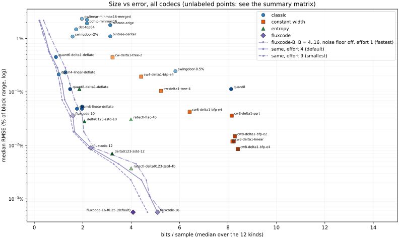
Each panel is one dataset: bits/sample over its 5 one-minute units, RMSE the median over their blocks. The lines are fluxcode at B = 4..16, noise floor and bits target off, at efforts 4 (heavy, the default), 1 and 9; the diamond is all defaults. A marker below the heavy line beats fluxcode at equal size. Lossless points (RMSE ≤ 10−7%) sit on the 0* row. The dotted line is 4 bits/sample. Errors are against the input, which for noisy-sine counts the noise as signal.
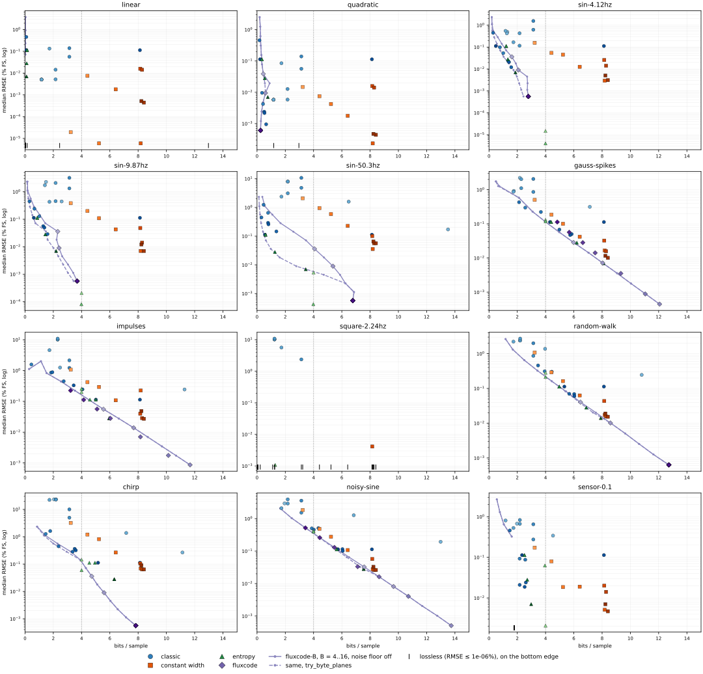
Straight line, slope 1 per sample. 5 one-minute signals; the plots show second 0 of the first (seed 0), full scale 999. Rows are in legend order.
| codec | bytes/block | ratio | RMSE median / worst | mean err median / worst | max err median / worst | min err median / worst | max |err| median / worst | notes |
|---|---|---|---|---|---|---|---|---|
pwlinear-minmax16-merged | 146 | 54.8× | 0.00511% / 0.00511% | -0.000171% / -0.000171% | +0% / +0% | +0% / +0% | 0.0121% / 0.0121% | 64 knots per block |
swingdoor-0.5% | 146 | 54.8× | 0.00504% / 0.00504% | +0.000171% / +0.000171% | +0% / +0% | +0% / +0% | 0.0121% / 0.0121% | 64 knots per block |
swingdoor-2% | 146 | 54.8× | 0.00504% / 0.00504% | +0.000171% / +0.000171% | +0% / +0% | +0% / +0% | 0.0121% / 0.0121% | 64 knots per block |
dct-top64 | 216 | 37.0× | 0.134% / 0.229% | +3.64e-13% / +2.91e-12% | -0.643% / -1.18% | +0.643% / +1.18% | 0.643% / 1.18% | |
pwlinear-minmax16 | 270 | 29.6× | 0.00516% / 0.00516% | +0% / +2.18e-12% | +0% / +0% | +0% / +0% | 0.0121% / 0.0121% | 126 knots per block |
pchip-minmax16 | 270 | 29.6× | 0.0143% / 0.0143% | -0.0004% / -0.0004% | +0% / +1.82e-13% | +0% / +0% | 0.0718% / 0.0718% | 126 knots per block |
bintree-center | 392 | 20.4× | 0.0563% / 0.0563% | +0% / +9.1e-14% | -0.0488% / -0.0488% | +0.0977% / +0.0977% | 0.0977% / 0.0977% | codes 00/01/10/11 per block: 6/479/289/227 |
bintree-edge | 392 | 20.4× | 0.14% / 0.14% | -0.000391% / -0.000391% | +0% / +0% | +0% / +0% | 0.195% / 0.195% | |
dpcm4-linear-deflate | 5 | 1638.2× | 0% / 1.68e-09% | +0% / +1.45e-09% | +0% / +2.91e-09% | +0% / +0% | 0% / 2.91e-09% | |
dpcm4-cubic-deflate | 5 | 1638.2× | 0% / 1.68e-09% | +0% / +1.45e-09% | +0% / +2.91e-09% | +0% / +0% | 0% / 2.91e-09% | |
quant6-delta1-deflate | 11 | 702.0× | 0.458% / 0.458% | +0% / +2.18e-12% | +0% / +0% | +0% / +0% | 0.787% / 0.787% | |
dpcm6-linear-deflate | 5 | 1638.2× | 0% / 1.68e-09% | +0% / +1.45e-09% | +0% / +2.91e-09% | +0% / +0% | 0% / 2.91e-09% | |
dpcm6-cubic-deflate | 5 | 1638.2× | 0% / 1.68e-09% | +0% / +1.45e-09% | +0% / +2.91e-09% | +0% / +0% | 0% / 2.91e-09% | |
dpcm6-mulaw-deflate | 5 | 1638.2× | 0% / 1.68e-09% | +0% / +1.45e-09% | +0% / +2.91e-09% | +0% / +0% | 0% / 2.91e-09% | |
quant8 | 1016 | 7.9× | 0.113% / 0.113% | +0% / +2.18e-12% | +0% / +0% | +0% / +0% | 0.195% / 0.195% | |
quant8-delta1-deflate | 12 | 650.1× | 0.113% / 0.113% | +0% / +2.18e-12% | +0% / +0% | +0% / +0% | 0.195% / 0.195% | |
gorilla-xor | 1622 | 4.9× | 0% / 0% | +0% / +0% | +0% / +0% | +0% / +0% | 0% / 0% | per block: same 0, reuse window 990, new window 9 |
cw-delta1-tree-2 | 404 | 19.8× | 1.93e-05% / 1.93e-05% | +1.67e-05% / +1.67e-05% | +3.35e-05% / +3.35e-05% | +0% / +0% | 3.35e-05% / 3.35e-05% | halving bits set 0%, leaves at code limit 100% |
cw4-delta1-bfp-e4 | 552 | 14.5× | 0.00751% / 0.00751% | +0% / +2.18e-12% | +0% / -1.14e-14% | +0% / +0% | 0.013% / 0.013% | frame exponents: mean 8.0, max 8 |
cw-delta1-tree-4 | 654 | 12.2× | 5.89e-06% / 5.89e-06% | +5.1e-06% / +5.1e-06% | +1.02e-05% / +1.02e-05% | +0% / +0% | 1.02e-05% / 1.02e-05% | halving bits set 0%, leaves at code limit 100% |
cw6-delta1-bfp-e4 | 802 | 10.0× | 0.00179% / 0.00179% | +0% / +2.18e-12% | +0% / +0% | +0% / +0% | 0.00307% / 0.00307% | frame exponents: mean 8.0, max 8 |
cw8-delta1-linear | 1023 | 7.8× | 5.89e-06% / 5.89e-06% | +5.1e-06% / +5.1e-06% | +1.02e-05% / +1.02e-05% | +0% / +0% | 1.02e-05% / 1.02e-05% | |
cw8-delta1-sqrt | 1019 | 7.9× | 0.0159% / 0.0159% | -0.00979% / -0.00979% | -0.0244% / -0.0244% | +0% / +0% | 0.0244% / 0.0244% | 100% of samples use a finer-than-7-bit delta |
cw8-delta1-bfp-e2 | 1035 | 7.7× | 0.0141% / 0.0141% | +0% / +2.18e-12% | +0% / +0% | +0% / +0% | 0.0244% / 0.0244% | frame exponents: mean 3.0, max 3 |
cw8-delta1-bfp-e4 | 1051 | 7.6× | 0.000442% / 0.000442% | +0% / +2.18e-12% | +0% / +0% | +0% / +0% | 0.000764% / 0.000764% | frame exponents: mean 8.0, max 8 |
cw-delta1-tree-7 | 1029 | 7.8× | 0.000515% / 0.000515% | +0.000184% / +0.000184% | -0.000602% / -0.000602% | +0% / +0% | 0.000794% / 0.000794% | halving bits set 0%, leaves at code limit 100% |
ratectl-delta0123-zstd-4b | 19 | 419.6× | 2.69e-08% / 2.69e-08% | -7.37e-11% / -7.39e-11% | -1.91e-08% / -1.91e-08% | +0% / +0% | 4.66e-08% / 4.66e-08% | |
ratectl-flac-4b | 306 | 26.1× | 2.69e-08% / 2.69e-08% | -7.37e-11% / -7.39e-11% | -1.91e-08% / -1.91e-08% | +0% / +0% | 4.66e-08% / 4.66e-08% | |
delta0123-zstd-8 | 18 | 437.1× | 0.113% / 0.113% | +0% / +2.18e-12% | +0% / +0% | +0% / +0% | 0.195% / 0.195% | orders 1: 300 |
delta12-zstd-8 | 18 | 437.1× | 0.113% / 0.113% | +0% / +2.18e-12% | +0% / +0% | +0% / +0% | 0.195% / 0.195% | orders 1: 300 |
delta0123-zstd-10 | 15 | 546.3× | 0.0282% / 0.0282% | +0% / +2.18e-12% | +0% / +0% | +0% / +0% | 0.0487% / 0.0487% | orders 1: 300 |
delta0123-zstd-12 | 14 | 590.4× | 0.00705% / 0.00705% | +0% / +2.18e-12% | +0% / +0% | +0% / +0% | 0.0121% / 0.0121% | orders 1: 300 |
fluxcode-10 | 3 | 2711.9× | 0% / 2.91e-12% | +0% / -3e-12% | +0% / -2.91e-12% | +0% / -2.91e-12% | 0% / 2.91e-12% | orders 1: 300; step 2^0 |
fluxcode-12 | 3 | 3038.0× | 0% / 2.91e-12% | +0% / -3e-12% | +0% / -2.91e-12% | +0% / -2.91e-12% | 0% / 2.91e-12% | orders 1: 300; decimal grid 10^0 |
fluxcode-16 | 3 | 3038.0× | 0% / 2.91e-12% | +0% / -3e-12% | +0% / -2.91e-12% | +0% / -2.91e-12% | 0% / 2.91e-12% | orders 1: 300; decimal grid 10^0 |
fluxcode-16-f0.01 | 3 | 3038.0× | 0% / 2.91e-12% | +0% / -3e-12% | +0% / -2.91e-12% | +0% / -2.91e-12% | 0% / 2.91e-12% | orders 1: 300; decimal grid 10^0 |
fluxcode-16-f0.03 | 3 | 3038.0× | 0% / 2.91e-12% | +0% / -3e-12% | +0% / -2.91e-12% | +0% / -2.91e-12% | 0% / 2.91e-12% | orders 1: 300; decimal grid 10^0 |
fluxcode-16-f0.1 | 3 | 3038.0× | 0% / 2.91e-12% | +0% / -3e-12% | +0% / -2.91e-12% | +0% / -2.91e-12% | 0% / 2.91e-12% | orders 1: 300; decimal grid 10^0 |
fluxcode-16-f0.25 | 3 | 3038.0× | 0% / 2.91e-12% | +0% / -3e-12% | +0% / -2.91e-12% | +0% / -2.91e-12% | 0% / 2.91e-12% | orders 1: 300; decimal grid 10^0 |
fluxcode-16-f0.5 | 3 | 3038.0× | 0% / 2.91e-12% | +0% / -3e-12% | +0% / -2.91e-12% | +0% / -2.91e-12% | 0% / 2.91e-12% | orders 1: 300; decimal grid 10^0 |
fluxcode-16-f1 | 3 | 3038.0× | 0% / 2.91e-12% | +0% / -3e-12% | +0% / -2.91e-12% | +0% / -2.91e-12% | 0% / 2.91e-12% | orders 1: 300; decimal grid 10^0 |
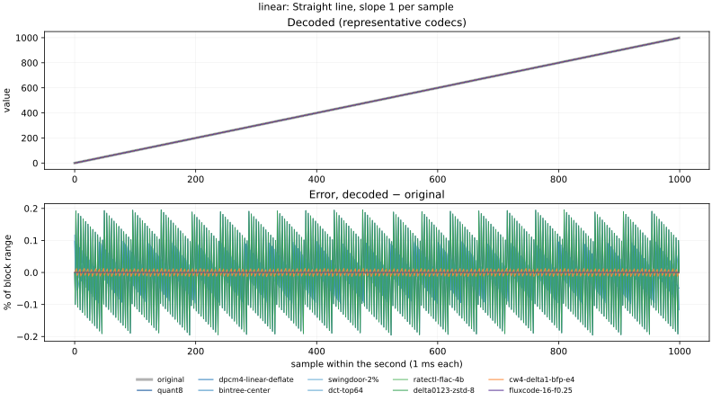
t²/1000 from the start of the minute. 5 one-minute signals; the plots show second 0 of the first (seed 1000), full scale 998. Rows are in legend order.
| codec | bytes/block | ratio | RMSE median / worst | mean err median / worst | max err median / worst | min err median / worst | max |err| median / worst | notes |
|---|---|---|---|---|---|---|---|---|
pwlinear-minmax16-merged | 146 | 54.8× | 0.0058% / 0.00835% | +0.000182% / +0.00547% | +0% / +0% | +0% / +0% | 0.0121% / 0.0166% | 64 knots per block |
swingdoor-0.5% | 146 | 54.8× | 0.00578% / 0.00778% | +0.000163% / +0.00464% | +0% / +0% | +0% / +0% | 0.0121% / 0.0183% | 64 knots per block |
swingdoor-2% | 146 | 54.8× | 0.00578% / 0.00778% | +0.000163% / +0.00464% | +0% / +0% | +0% / +0% | 0.0121% / 0.0183% | 64 knots per block |
dct-top64 | 216 | 37.0× | 0.0847% / 0.141% | +1.03e-13% / +9.23e-13% | -0.495% / -0.758% | +0.339% / +0.667% | 0.495% / 0.758% | |
pwlinear-minmax16 | 270 | 29.6× | 0.00584% / 0.00791% | +0.000203% / +0.00432% | +0% / +0% | +0% / +0% | 0.0122% / 0.0165% | 126 knots per block |
pchip-minmax16 | 270 | 29.6× | 0.0127% / 0.0209% | +0.000175% / +0.00189% | +0% / +4.91e-13% | +0% / +0% | 0.0424% / 0.0764% | 126 knots per block |
bintree-center | 392 | 20.4× | 0.0563% / 0.0784% | +0.0004% / -0.00454% | -0.0488% / -0.0977% | +0.0977% / +0.0977% | 0.0977% / 0.195% | codes 00/01/10/11 per block: 7/477/278/238 |
bintree-edge | 392 | 20.4× | 0.139% / 0.197% | +0.00103% / +0.0147% | +0% / +0% | +0% / +0% | 0.195% / 0.391% | |
dpcm4-linear-deflate | 53 | 150.1× | 0.00423% / 0.00813% | -5.84e-06% / +0.000325% | +0.0014% / -0.00717% | +0% / +0% | 0.00726% / 0.0143% | |
dpcm4-cubic-deflate | 45 | 179.6× | 0.0096% / 0.0136% | -0.00011% / +0.00121% | -0.00173% / -0.0218% | +0% / +0% | 0.0165% / 0.0325% | |
quant6-delta1-deflate | 22 | 366.9× | 0.458% / 0.458% | -0.00176% / -0.00881% | +0% / +0% | +0% / +0% | 0.793% / 0.794% | |
dpcm6-linear-deflate | 81 | 99.2× | 0.00095% / 0.00189% | -1.13e-06% / +8.94e-05% | -0.000137% / -0.00187% | +0% / +0% | 0.00164% / 0.00323% | |
dpcm6-cubic-deflate | 64 | 125.6× | 0.0024% / 0.00315% | -7.89e-06% / +0.000193% | +0.000937% / -0.00556% | +0% / +0% | 0.00414% / 0.00787% | |
dpcm6-mulaw-deflate | 66 | 121.2× | 0.00218% / 0.00282% | -2.39e-05% / -0.000129% | +0.000431% / -0.00371% | +0% / +0% | 0.00377% / 0.00731% | |
quant8 | 1016 | 7.9× | 0.113% / 0.114% | +0.000746% / +0.00537% | +0% / +0% | +0% / +0% | 0.196% / 0.196% | |
quant8-delta1-deflate | 27 | 298.4× | 0.113% / 0.114% | +0.000746% / +0.00537% | +0% / +0% | +0% / +0% | 0.196% / 0.196% | |
gorilla-xor | 6309 | 1.3× | 0% / 0% | +0% / +0% | +0% / +0% | +0% / +0% | 0% / 0% | per block: same 0, reuse window 923, new window 76 |
cw-delta1-tree-2 | 404 | 19.8× | 0.0148% / 0.0212% | +0.000104% / +0.00249% | +0.00799% / -0.03% | +0% / +0% | 0.0254% / 0.0499% | halving bits set 0%, leaves at code limit 93% |
cw4-delta1-bfp-e4 | 552 | 14.5× | 0.00751% / 0.00776% | -2.31e-05% / +0.000497% | +0% / +0.013% | +0% / +0% | 0.013% / 0.0257% | frame exponents: mean 8.0, max 13 |
cw-delta1-tree-4 | 654 | 12.2× | 0.00423% / 0.00618% | -8.93e-06% / +0.000347% | +0.00141% / +0.00731% | +0% / +0% | 0.00726% / 0.0143% | halving bits set 0%, leaves at code limit 80% |
cw6-delta1-bfp-e4 | 802 | 10.0× | 0.00178% / 0.00186% | -1.96e-06% / +0.00015% | +0% / -0.00465% | +0% / +0% | 0.0031% / 0.00574% | frame exponents: mean 8.0, max 13 |
cw8-delta1-linear | 1023 | 7.8× | 0.000233% / 0.000461% | -1.5e-06% / +2.25e-05% | +4.84e-05% / -0.000451% | +0% / +0% | 0.0004% / 0.000787% | |
cw8-delta1-sqrt | 1019 | 7.9× | 0.0158% / 0.0159% | -0.00967% / -0.00985% | -0.0244% / -0.0427% | +0% / +0% | 0.0244% / 0.0427% | 100% of samples use a finer-than-7-bit delta |
cw8-delta1-bfp-e2 | 1035 | 7.7× | 0.0141% / 0.015% | -0.000133% / +0.00234% | +0% / +0% | +0% / +0% | 0.0245% / 0.0245% | frame exponents: mean 3.0, max 3 |
cw8-delta1-bfp-e4 | 1051 | 7.6× | 0.000437% / 0.000454% | -3.26e-07% / +3.75e-05% | +0% / +0.000862% | +0% / +0% | 0.000766% / 0.00145% | frame exponents: mean 8.1, max 13 |
cw-delta1-tree-7 | 1029 | 7.8× | 0.000469% / 0.000687% | -2.38e-06% / +5.48e-05% | -0.000185% / -0.00126% | +0% / +0% | 0.000806% / 0.00158% | halving bits set 0%, leaves at code limit 24% |
ratectl-delta0123-zstd-4b | 148 | 54.1× | 2.69e-08% / 2.75e-08% | -1.9e-10% / +2.12e-09% | -1.91e-08% / -1.91e-08% | +0% / +0% | 4.65e-08% / 4.66e-08% | |
ratectl-flac-4b | 370 | 21.6× | 2.69e-08% / 2.75e-08% | -1.9e-10% / +2.12e-09% | -1.91e-08% / -1.91e-08% | +0% / +0% | 4.65e-08% / 4.66e-08% | |
delta0123-zstd-8 | 43 | 185.6× | 0.113% / 0.114% | +0.000746% / +0.00537% | +0% / +0% | +0% / +0% | 0.196% / 0.196% | orders 1: 300 |
delta12-zstd-8 | 43 | 185.6× | 0.113% / 0.114% | +0.000746% / +0.00537% | +0% / +0% | +0% / +0% | 0.196% / 0.196% | orders 1: 300 |
delta0123-zstd-10 | 68 | 117.2× | 0.0282% / 0.0305% | -0.000337% / +0.00533% | +0% / +0% | +0% / +0% | 0.0488% / 0.0489% | orders 1: 295, 2: 5 |
delta0123-zstd-12 | 95 | 83.9× | 0.00704% / 0.00733% | -2.27e-05% / +0.000574% | +0% / +0% | +0% / +0% | 0.0122% / 0.0122% | orders 1: 290, 2: 10 |
fluxcode-10 | 55 | 145.9× | 0.0387% / 0.0565% | +0.000275% / +0.00398% | -2.38e-05% / -0.079% | +0% / -0.0866% | 0.0671% / 0.0971% | orders 1: 300; step 2^0..2^7 |
fluxcode-12 | 75 | 107.3× | 0.00949% / 0.0138% | +0.000132% / +0.000596% | +0.000952% / +0.0222% | +0% / -0.0229% | 0.0168% / 0.0243% | orders 1: 300; step 2^-2..2^5 |
fluxcode-16 | 32 | 254.0× | 0.000605% / 0.000862% | +0% / -8.54e-05% | -1.67e-06% / -0.0001% | +0% / -3.59e-13% | 0.00104% / 0.00152% | orders 1: 280, 2: 20; step 2^-6..2^1 |
fluxcode-16-f0.01 | 32 | 254.0× | 0.000605% / 0.000862% | +0% / -8.54e-05% | -1.67e-06% / -0.0001% | +0% / -3.59e-13% | 0.00104% / 0.00152% | orders 1: 280, 2: 20; step 2^-6..2^1 |
fluxcode-16-f0.03 | 32 | 254.0× | 0.000605% / 0.000862% | +0% / -8.54e-05% | -1.67e-06% / -0.0001% | +0% / -3.59e-13% | 0.00104% / 0.00152% | orders 1: 280, 2: 20; step 2^-6..2^1 |
fluxcode-16-f0.1 | 32 | 254.0× | 0.000605% / 0.000862% | +0% / -8.54e-05% | -1.67e-06% / -0.0001% | +0% / -3.59e-13% | 0.00104% / 0.00152% | orders 1: 280, 2: 20; step 2^-6..2^1 |
fluxcode-16-f0.25 | 32 | 254.0× | 0.000605% / 0.000862% | +0% / -8.54e-05% | -1.67e-06% / -0.0001% | +0% / -3.59e-13% | 0.00104% / 0.00152% | orders 1: 280, 2: 20; step 2^-6..2^1 |
fluxcode-16-f0.5 | 32 | 254.0× | 0.000605% / 0.000862% | +0% / -8.54e-05% | -1.67e-06% / -0.0001% | +0% / -3.59e-13% | 0.00104% / 0.00152% | orders 1: 280, 2: 20; step 2^-6..2^1 |
fluxcode-16-f1 | 32 | 254.0× | 0.000605% / 0.000862% | +0% / -8.54e-05% | -1.67e-06% / -0.0001% | +0% / -3.59e-13% | 0.00104% / 0.00152% | orders 1: 280, 2: 20; step 2^-6..2^1 |
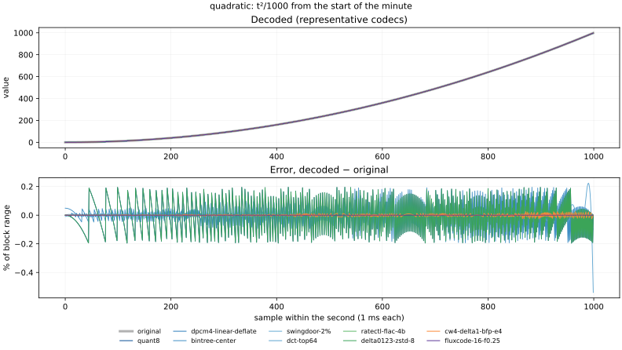
100·sin, √17 ≈ 4.123 Hz, random phase. 5 one-minute signals; the plots show second 0 of the first (seed 2000), full scale 200. Rows are in legend order.
| codec | bytes/block | ratio | RMSE median / worst | mean err median / worst | max err median / worst | min err median / worst | max |err| median / worst | notes |
|---|---|---|---|---|---|---|---|---|
pwlinear-minmax16-merged | 162 | 49.2× | 0.489% / 0.5% | -0.000241% / -0.0262% | +0% / +7.11e-15% | +0% / +0% | 1.04% / 1.05% | 72 knots per block |
swingdoor-0.5% | 158 | 50.7× | 0.423% / 0.428% | -0.0013% / -0.0164% | -0.0244% / -0.0733% | +0.0244% / +0.0733% | 0.727% / 0.743% | 70 knots per block |
swingdoor-2% | 146 | 54.8× | 0.55% / 0.558% | -7.78e-05% / -0.0187% | -0.0244% / -0.293% | +0.0244% / +0.293% | 1.07% / 1.08% | 64 knots per block |
dct-top64 | 216 | 37.0× | 0.167% / 0.19% | +2.07e-05% / +0.00992% | +0.0527% / +0.42% | -0.0544% / -0.419% | 2.74% / 3.12% | |
pwlinear-minmax16 | 270 | 29.6× | 0.429% / 0.439% | -0.000419% / +0.0244% | +0% / +7.11e-15% | +0% / +0% | 0.92% / 0.926% | 126 knots per block |
pchip-minmax16 | 270 | 29.6× | 0.116% / 0.121% | -0.000297% / +0.00969% | +0% / +1.42e-14% | +0% / +0% | 0.283% / 0.309% | 126 knots per block |
bintree-center | 392 | 20.4× | 0.622% / 0.649% | +0.000665% / +0.0292% | -0.391% / -0.391% | +0.391% / +0.391% | 1.56% / 1.56% | codes 00/01/10/11 per block: 57/356/294/294 |
bintree-edge | 392 | 20.4× | 1.56% / 1.63% | +0.000201% / -0.0764% | +0% / +7.11e-15% | +0% / +0% | 3.12% / 3.12% | |
dpcm4-linear-deflate | 126 | 63.4× | 0.0532% / 0.0549% | -7.52e-05% / -0.00519% | -0.00501% / +0.0919% | +0.00825% / +0.0924% | 0.0924% / 0.0925% | |
dpcm4-cubic-deflate | 97 | 82.8× | 0.0987% / 0.104% | -0.000416% / -0.0161% | +0.00972% / +0.0199% | -0.00919% / -0.0196% | 0.21% / 0.21% | |
quant6-delta1-deflate | 36 | 222.5× | 0.449% / 0.45% | -0.000144% / +0.014% | +0% / -2.13e-14% | +0% / +0% | 0.793% / 0.794% | |
dpcm6-linear-deflate | 197 | 40.7× | 0.0121% / 0.0125% | +1.59e-05% / -0.00117% | +0.000611% / +0.0208% | +0.00144% / +0.0209% | 0.0209% / 0.0209% | |
dpcm6-cubic-deflate | 169 | 47.4× | 0.0233% / 0.0249% | -3.46e-05% / +0.00227% | +0.0022% / +0.00445% | -0.00224% / -0.00447% | 0.0526% / 0.0527% | |
dpcm6-mulaw-deflate | 177 | 45.3× | 0.0208% / 0.022% | -9.34e-05% / +0.002% | +0.00395% / +0.0068% | -0.00376% / -0.00681% | 0.0479% / 0.048% | |
quant8 | 1016 | 7.9× | 0.112% / 0.113% | +1.79e-05% / +0.00809% | +0% / +7.11e-15% | +0% / +0% | 0.196% / 0.196% | |
quant8-delta1-deflate | 60 | 133.3× | 0.112% / 0.113% | +1.79e-05% / +0.00809% | +0% / +7.11e-15% | +0% / +0% | 0.196% / 0.196% | |
gorilla-xor | 8097 | 1.0× | 0% / 0% | +0% / +0% | +0% / +0% | +0% / +0% | 0% / 0% | per block: same 0, reuse window 974, new window 25 |
cw-delta1-tree-2 | 404 | 19.8× | 0.157% / 0.224% | +0.000104% / +0.025% | +0.00201% / +0.0277% | -0.00154% / -0.0355% | 0.324% / 0.628% | halving bits set 11%, leaves at code limit 52% |
cw4-delta1-bfp-e4 | 552 | 14.5× | 0.0541% / 0.0566% | -6.57e-05% / -0.00515% | +0.0196% / +0.0519% | -0.0204% / -0.0514% | 0.104% / 0.104% | frame exponents: mean 5.3, max 8 |
cw-delta1-tree-4 | 654 | 12.2× | 0.0454% / 0.0479% | +7.19e-05% / +0.00488% | +0.000166% / -0.00574% | +6.09e-05% / +0.00562% | 0.0924% / 0.0925% | halving bits set 10%, leaves at code limit 26% |
cw6-delta1-bfp-e4 | 802 | 10.0× | 0.0127% / 0.0132% | +3.02e-05% / -0.00124% | +0.00375% / +0.0121% | -0.0036% / -0.0124% | 0.0248% / 0.0248% | frame exponents: mean 5.3, max 8 |
cw8-delta1-linear | 1023 | 7.8× | 0.00294% / 0.00306% | +8.32e-06% / +0.000291% | -0.000183% / -0.00504% | -0.000485% / -0.00506% | 0.0051% / 0.0051% | |
cw8-delta1-sqrt | 1019 | 7.9× | 0.0257% / 0.0265% | -2.42e-05% / +0.00186% | -0.00531% / -0.0121% | +0.00452% / +0.012% | 0.0488% / 0.0488% | 38% of samples use a finer-than-7-bit delta |
cw8-delta1-bfp-e2 | 1035 | 7.7× | 0.0142% / 0.0146% | +2.28e-05% / -0.00126% | -0.000144% / -0.0243% | -0.000144% / -0.0243% | 0.0245% / 0.0245% | frame exponents: mean 3.0, max 3 |
cw8-delta1-bfp-e4 | 1051 | 7.6× | 0.00311% / 0.00322% | -3.63e-06% / -0.00026% | +0.000594% / +0.00303% | -0.000424% / -0.00304% | 0.00612% / 0.00613% | frame exponents: mean 5.4, max 8 |
cw-delta1-tree-7 | 1029 | 7.8× | 0.00505% / 0.00532% | +2.3e-06% / -0.000537% | +6.4e-05% / +0.000636% | +5.2e-05% / -0.000642% | 0.0103% / 0.0103% | halving bits set 10%, leaves at code limit 8% |
ratectl-delta0123-zstd-4b | 499 | 16.0× | 1.5e-05% / 1.55e-05% | -6.88e-08% / +1.11e-06% | -1.02e-05% / -2.32e-05% | +0% / +0% | 2.59e-05% / 2.6e-05% | |
ratectl-flac-4b | 500 | 16.0× | 4.05e-06% / 4.3e-06% | -8.95e-09% / -3.7e-07% | +2.09e-06% / +3.27e-06% | +0% / +0% | 7.04e-06% / 7.17e-06% | |
delta0123-zstd-8 | 152 | 52.6× | 0.112% / 0.113% | +1.79e-05% / +0.00809% | +0% / +0% | +0% / +0% | 0.196% / 0.196% | orders 2: 300 |
delta12-zstd-8 | 152 | 52.6× | 0.112% / 0.113% | +1.79e-05% / +0.00809% | +0% / +0% | +0% / +0% | 0.196% / 0.196% | orders 2: 300 |
delta0123-zstd-10 | 167 | 48.0× | 0.0281% / 0.0289% | -6.51e-05% / +0.00293% | +0% / +0% | +0% / +0% | 0.0488% / 0.0489% | orders 2: 300 |
delta0123-zstd-12 | 234 | 34.2× | 0.00702% / 0.00728% | +4.37e-06% / +0.000621% | +0% / +0% | +0% / +0% | 0.0122% / 0.0122% | orders 2: 299, 3: 1 |
fluxcode-10 | 122 | 65.5× | 0.0359% / 0.0365% | -5.15e-07% / -0.00338% | +0.000144% / +0.000884% | -0.000131% / -0.000904% | 0.0625% / 0.0625% | orders 2: 300; step 2^-2 |
fluxcode-12 | 212 | 37.7× | 0.00903% / 0.00928% | -1.93e-05% / -0.000717% | +0.000144% / +0.000884% | -0.000131% / -0.000904% | 0.0156% / 0.0156% | orders 2: 300; step 2^-4 |
fluxcode-16 | 300 | 26.7× | 0.000563% / 0.000588% | +9.55e-07% / +5.1e-05% | +0.000144% / +0.000884% | -0.000131% / -0.000904% | 0.000976% / 0.000977% | orders 3: 300; step 2^-8 |
fluxcode-16-f0.01 | 300 | 26.7× | 0.000563% / 0.000588% | +9.55e-07% / +5.1e-05% | +0.000144% / +0.000884% | -0.000131% / -0.000904% | 0.000976% / 0.000977% | orders 3: 300; step 2^-8 |
fluxcode-16-f0.03 | 300 | 26.7× | 0.000563% / 0.000588% | +9.55e-07% / +5.1e-05% | +0.000144% / +0.000884% | -0.000131% / -0.000904% | 0.000976% / 0.000977% | orders 3: 300; step 2^-8 |
fluxcode-16-f0.1 | 300 | 26.7× | 0.000563% / 0.000588% | +9.55e-07% / +5.1e-05% | +0.000144% / +0.000884% | -0.000131% / -0.000904% | 0.000976% / 0.000977% | orders 3: 300; step 2^-8 |
fluxcode-16-f0.25 | 300 | 26.7× | 0.000563% / 0.000588% | +9.55e-07% / +5.1e-05% | +0.000144% / +0.000884% | -0.000131% / -0.000904% | 0.000976% / 0.000977% | orders 3: 300; step 2^-8 |
fluxcode-16-f0.5 | 300 | 26.7× | 0.000563% / 0.000588% | +9.55e-07% / +5.1e-05% | +0.000144% / +0.000884% | -0.000131% / -0.000904% | 0.000976% / 0.000977% | orders 3: 300; step 2^-8 |
fluxcode-16-f1 | 300 | 26.7× | 0.000563% / 0.000588% | +9.55e-07% / +5.1e-05% | +0.000144% / +0.000884% | -0.000131% / -0.000904% | 0.000976% / 0.000977% | orders 3: 300; step 2^-8 |
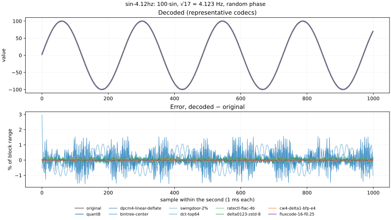
100·sin, π² ≈ 9.870 Hz, random phase. 5 one-minute signals; the plots show second 0 of the first (seed 3000), full scale 200. Rows are in legend order.
| codec | bytes/block | ratio | RMSE median / worst | mean err median / worst | max err median / worst | min err median / worst | max |err| median / worst | notes |
|---|---|---|---|---|---|---|---|---|
pwlinear-minmax16-merged | 185 | 43.1× | 2.28% / 2.36% | -0.00274% / -0.12% | +0% / +7.11e-15% | +0% / +0% | 5.17% / 5.39% | 84 knots per block |
swingdoor-0.5% | 324 | 24.7× | 0.444% / 0.453% | -0.000222% / +0.021% | +0% / +7.11e-15% | +0% / +0% | 0.784% / 0.84% | 153 knots per block |
swingdoor-2% | 175 | 45.6× | 1.73% / 1.76% | -0.00331% / -0.0493% | -0.0733% / -0.317% | +0.0733% / +0.317% | 2.9% / 3.02% | 79 knots per block |
dct-top64 | 216 | 37.0× | 0.431% / 0.487% | -1.77e-05% / -0.0871% | +0.21% / +1.66% | -0.203% / -1.65% | 6.88% / 7.85% | |
pwlinear-minmax16 | 270 | 29.6× | 2.08% / 2.17% | -0.00802% / -0.105% | +0% / +7.11e-15% | +0% / +0% | 4.74% / 4.82% | 126 knots per block |
pchip-minmax16 | 270 | 29.6× | 0.454% / 0.5% | +0.0029% / +0.0548% | +0% / +7.11e-15% | +0% / -7.11e-15% | 1.32% / 1.66% | 126 knots per block |
bintree-center | 392 | 20.4× | 1.33% / 1.38% | +0.000362% / +0.0572% | -0.781% / -0.781% | +0.781% / +0.781% | 3.12% / 3.12% | codes 00/01/10/11 per block: 107/281/307/307 |
bintree-edge | 392 | 20.4× | 3.2% / 3.38% | -0.00383% / +0.198% | +0% / +7.11e-15% | +0% / +0% | 6.24% / 6.25% | |
dpcm4-linear-deflate | 126 | 63.5× | 0.128% / 0.131% | -0.000383% / +0.00911% | -0.0187% / -0.221% | -0.0097% / +0.221% | 0.221% / 0.221% | |
dpcm4-cubic-deflate | 83 | 96.2× | 0.241% / 0.255% | -1.07e-05% / +0.0213% | +0.0487% / +0.0688% | -0.047% / -0.0684% | 0.503% / 0.503% | |
quant6-delta1-deflate | 39 | 203.3× | 0.448% / 0.453% | -0.000248% / +0.0116% | +0% / +2.13e-14% | +0% / +0% | 0.793% / 0.794% | |
dpcm6-linear-deflate | 199 | 40.2× | 0.0288% / 0.0304% | +8.83e-06% / -0.00361% | +9.6e-05% / -0.0499% | +0.000399% / -0.0494% | 0.05% / 0.05% | |
dpcm6-cubic-deflate | 161 | 49.7× | 0.0562% / 0.058% | +3.34e-05% / +0.0069% | +0.00728% / +0.0138% | -0.00763% / -0.0136% | 0.126% / 0.126% | |
dpcm6-mulaw-deflate | 171 | 46.7× | 0.0498% / 0.0522% | +7.71e-05% / +0.00664% | +0.0122% / +0.0187% | -0.0117% / -0.0181% | 0.115% / 0.115% | |
quant8 | 1016 | 7.9× | 0.113% / 0.114% | -0.000185% / +0.00497% | +0% / +2.13e-14% | +0% / +0% | 0.196% / 0.196% | |
quant8-delta1-deflate | 78 | 103.0× | 0.113% / 0.114% | -0.000185% / +0.00497% | +0% / +2.13e-14% | +0% / +0% | 0.196% / 0.196% | |
gorilla-xor | 8179 | 1.0× | 0% / 0% | +0% / +0% | +0% / +0% | +0% / +0% | 0% / 0% | per block: same 0, reuse window 980, new window 19 |
cw-delta1-tree-2 | 404 | 19.8× | 0.383% / 0.554% | -0.00185% / +0.0376% | +0.0169% / +0.159% | -0.0123% / -0.312% | 0.775% / 1.49% | halving bits set 15%, leaves at code limit 51% |
cw4-delta1-bfp-e4 | 552 | 14.5× | 0.199% / 0.209% | +0.000869% / -0.0157% | +0.0259% / +0.375% | -0.0109% / -0.408% | 0.416% / 0.417% | frame exponents: mean 3.4, max 6 |
cw-delta1-tree-4 | 654 | 12.2× | 0.109% / 0.117% | -0.000187% / +0.00919% | -0.00012% / -0.0274% | +0.00152% / +0.0277% | 0.221% / 0.221% | halving bits set 14%, leaves at code limit 25% |
cw6-delta1-bfp-e4 | 802 | 10.0× | 0.0428% / 0.0456% | -0.000107% / +0.00443% | +0.0169% / +0.0496% | -0.0148% / +0.0496% | 0.099% / 0.0992% | frame exponents: mean 3.6, max 6 |
cw8-delta1-linear | 1023 | 7.8× | 0.00703% / 0.00723% | -2.46e-05% / -0.000599% | -0.00104% / +0.0122% | +0.00139% / +0.0122% | 0.0122% / 0.0122% | |
cw8-delta1-sqrt | 1019 | 7.9× | 0.0479% / 0.0496% | +4.46e-06% / +0.00311% | -0.00443% / -0.0235% | +0.00692% / +0.0241% | 0.0976% / 0.0977% | 15% of samples use a finer-than-7-bit delta |
cw8-delta1-bfp-e2 | 1035 | 7.7× | 0.0142% / 0.0147% | +3.28e-05% / +0.00138% | +0.000479% / -0.0245% | +0.000479% / -0.0245% | 0.0245% / 0.0245% | frame exponents: mean 3.0, max 3 |
cw8-delta1-bfp-e4 | 1051 | 7.6× | 0.00698% / 0.00725% | -4.77e-06% / +0.00076% | +0.00236% / -0.0122% | -0.00312% / +0.0122% | 0.0122% / 0.0123% | frame exponents: mean 4.0, max 6 |
cw-delta1-tree-7 | 1029 | 7.8× | 0.0121% / 0.0127% | +6.75e-06% / +0.00157% | -0.000191% / +0.00306% | +0.000317% / -0.00306% | 0.0246% / 0.0246% | halving bits set 14%, leaves at code limit 8% |
ratectl-delta0123-zstd-4b | 500 | 16.0× | 0.000207% / 0.000219% | -6.44e-07% / -1.81e-05% | +2.24e-05% / +0.000282% | +0% / +0% | 0.000359% / 0.00036% | |
ratectl-flac-4b | 498 | 16.1× | 8.17e-05% / 9.24e-05% | +1.11e-08% / +7.86e-06% | +0.000106% / +0.00015% | +0% / +0% | 0.000142% / 0.000157% | |
delta0123-zstd-8 | 108 | 74.1× | 0.113% / 0.114% | -0.000185% / +0.00497% | +0% / +0% | +0% / +0% | 0.196% / 0.196% | orders 2: 300 |
delta12-zstd-8 | 108 | 74.1× | 0.113% / 0.114% | -0.000185% / +0.00497% | +0% / +0% | +0% / +0% | 0.196% / 0.196% | orders 2: 300 |
delta0123-zstd-10 | 179 | 44.7× | 0.0281% / 0.0285% | +5.99e-05% / +0.00322% | +0% / +0% | +0% / +0% | 0.0488% / 0.0489% | orders 3: 300 |
delta0123-zstd-12 | 275 | 29.1× | 0.00702% / 0.00727% | -1.62e-05% / -0.000605% | +0% / +0% | +0% / +0% | 0.0122% / 0.0122% | orders 3: 300 |
fluxcode-10 | 177 | 45.3× | 0.0358% / 0.0364% | -9.08e-05% / -0.0023% | +0.000168% / +0.00148% | -0.000175% / -0.0018% | 0.0625% / 0.0625% | orders 2: 106, 3: 194; step 2^-2 |
fluxcode-12 | 242 | 33.0× | 0.009% / 0.00922% | +2.65e-06% / +0.000706% | +0.000168% / +0.00148% | -0.000175% / -0.0018% | 0.0156% / 0.0156% | orders 3: 300; step 2^-4 |
fluxcode-16 | 427 | 18.7× | 0.000563% / 0.000587% | +8.5e-07% / -5.16e-05% | +3.21e-05% / -0.000972% | -3.23e-05% / +0.000974% | 0.000976% / 0.000977% | orders 3: 300; step 2^-8 |
fluxcode-16-f0.01 | 427 | 18.7× | 0.000563% / 0.000587% | +8.5e-07% / -5.16e-05% | +3.21e-05% / -0.000972% | -3.23e-05% / +0.000974% | 0.000976% / 0.000977% | orders 3: 300; step 2^-8 |
fluxcode-16-f0.03 | 427 | 18.7× | 0.000563% / 0.000587% | +8.5e-07% / -5.16e-05% | +3.21e-05% / -0.000972% | -3.23e-05% / +0.000974% | 0.000976% / 0.000977% | orders 3: 300; step 2^-8 |
fluxcode-16-f0.1 | 427 | 18.7× | 0.000563% / 0.000587% | +8.5e-07% / -5.16e-05% | +3.21e-05% / -0.000972% | -3.23e-05% / +0.000974% | 0.000976% / 0.000977% | orders 3: 300; step 2^-8 |
fluxcode-16-f0.25 | 427 | 18.7× | 0.000563% / 0.000587% | +8.5e-07% / -5.16e-05% | +3.21e-05% / -0.000972% | -3.23e-05% / +0.000974% | 0.000976% / 0.000977% | orders 3: 300; step 2^-8 |
fluxcode-16-f0.5 | 427 | 18.7× | 0.000563% / 0.000587% | +8.5e-07% / -5.16e-05% | +3.21e-05% / -0.000972% | -3.23e-05% / +0.000974% | 0.000976% / 0.000977% | orders 3: 300; step 2^-8 |
fluxcode-16-f1 | 427 | 18.7× | 0.000563% / 0.000587% | +8.5e-07% / -5.16e-05% | +3.21e-05% / -0.000972% | -3.23e-05% / +0.000974% | 0.000976% / 0.000977% | orders 3: 300; step 2^-8 |
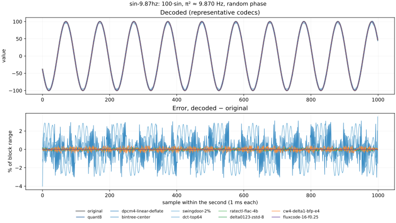
100·sin, 16π ≈ 50.27 Hz (~19.9 samples/cycle), random phase. 5 one-minute signals; the plots show second 0 of the first (seed 4000), full scale 200. Rows are in legend order.
| codec | bytes/block | ratio | RMSE median / worst | mean err median / worst | max err median / worst | min err median / worst | max |err| median / worst | notes |
|---|---|---|---|---|---|---|---|---|
pwlinear-minmax16-merged | 272 | 29.4× | 7.98% / 8.11% | -0.000909% / -0.131% | +0% / +7.11e-15% | +0% / +0% | 17.2% / 17.8% | 127 knots per block |
swingdoor-0.5% | 1689 | 4.7× | 0.172% / 0.178% | +8.39e-05% / -0.00224% | +0% / +7.11e-15% | +0% / +0% | 0.815% / 0.842% | 836 knots per block |
swingdoor-2% | 811 | 9.9× | 1.59% / 1.62% | -0.000509% / +0.0204% | +0% / +7.11e-15% | +0% / +0% | 3.27% / 3.34% | 396 knots per block |
dct-top64 | 216 | 37.0× | 2.38% / 2.66% | +0.0072% / +0.235% | +4.84% / +9.48% | -4.93% / -9.27% | 28.2% / 33.4% | |
pwlinear-minmax16 | 272 | 29.4× | 7.98% / 8.11% | -0.000909% / -0.131% | +0% / +7.11e-15% | +0% / +0% | 17.2% / 17.8% | 127 knots per block |
pchip-minmax16 | 272 | 29.4× | 3.12% / 3.86% | -0.00611% / -0.178% | +0% / +2.13e-14% | +0% / +0% | 13.2% / 36.2% | 127 knots per block |
bintree-center | 392 | 20.4× | 4.84% / 4.95% | -0.00319% / -0.095% | -3.13% / -3.13% | +3.12% / +3.13% | 12.5% / 12.5% | codes 00/01/10/11 per block: 349/123/264/264 |
bintree-edge | 392 | 20.4× | 10.7% / 11.1% | +0.00277% / +0.194% | +0% / +7.11e-15% | +0% / +0% | 25% / 25% | |
dpcm4-linear-deflate | 98 | 81.8× | 0.648% / 0.667% | +0.000152% / -0.0786% | -0.0837% / +1.12% | +0.151% / -1.12% | 1.12% / 1.12% | |
dpcm4-cubic-deflate | 58 | 138.2× | 1.24% / 1.27% | -0.00365% / -0.101% | +0.713% / +1.11% | -0.699% / -1.04% | 2.55% / 2.55% | |
quant6-delta1-deflate | 39 | 205.7× | 0.447% / 0.459% | -0.000149% / +0.0157% | +0% / -2.13e-14% | +0% / +0% | 0.793% / 0.794% | |
dpcm6-linear-deflate | 171 | 46.7× | 0.146% / 0.154% | -6.68e-05% / -0.0159% | +0.00257% / -0.253% | +0.0113% / +0.253% | 0.253% / 0.254% | |
dpcm6-cubic-deflate | 98 | 82.0× | 0.291% / 0.298% | -0.00041% / -0.0224% | +0.128% / +0.166% | -0.129% / -0.165% | 0.638% / 0.64% | |
dpcm6-mulaw-deflate | 101 | 79.1× | 0.259% / 0.271% | -0.000367% / -0.024% | +0.12% / +0.164% | -0.118% / -0.162% | 0.581% / 0.583% | |
quant8 | 1016 | 7.9× | 0.113% / 0.116% | +5.97e-05% / +0.00537% | +0% / +2.13e-14% | +0% / +0% | 0.196% / 0.196% | |
quant8-delta1-deflate | 70 | 114.0× | 0.113% / 0.116% | +5.97e-05% / +0.00537% | +0% / +2.13e-14% | +0% / +0% | 0.196% / 0.196% | |
gorilla-xor | 8246 | 1.0× | 0% / 0% | +0% / +0% | +0% / +0% | +0% / +0% | 0% / 0% | per block: same 0, reuse window 992, new window 7 |
cw-delta1-tree-2 | 404 | 19.8× | 2.09% / 3.11% | -0.000673% / -0.305% | +1.11% / +3.81% | -1.46% / -3.92% | 5.3% / 6.94% | halving bits set 14%, leaves at code limit 50% |
cw4-delta1-bfp-e4 | 552 | 14.5× | 0.952% / 1.01% | +0.0024% / +0.106% | +0.0491% / -1.66% | +0.0491% / -1.66% | 1.67% / 1.67% | frame exponents: mean 1.0, max 1 |
cw-delta1-tree-4 | 654 | 12.2× | 0.589% / 0.615% | -0.000685% / -0.0709% | +0.427% / +0.987% | -0.383% / -0.953% | 1.12% / 1.12% | halving bits set 11%, leaves at code limit 24% |
cw6-delta1-bfp-e4 | 802 | 10.0× | 0.228% / 0.248% | -0.0011% / -0.0391% | -0.0176% / +0.396% | -0.0176% / +0.396% | 0.397% / 0.397% | frame exponents: mean 1.0, max 1 |
cw8-delta1-linear | 1023 | 7.8× | 0.0357% / 0.037% | +6.69e-07% / -0.00358% | +0.00336% / -0.0619% | -0.000279% / +0.0616% | 0.0619% / 0.0619% | |
cw8-delta1-sqrt | 1019 | 7.9× | 0.101% / 0.105% | -0.000149% / -0.00748% | -0.0317% / -0.0744% | +0.0342% / +0.086% | 0.195% / 0.195% | 3% of samples use a finer-than-7-bit delta |
cw8-delta1-bfp-e2 | 1035 | 7.7× | 0.0565% / 0.0586% | -0.000193% / -0.0061% | -0.00178% / +0.0976% | -0.00178% / +0.0976% | 0.098% / 0.098% | frame exponents: mean 1.0, max 1 |
cw8-delta1-bfp-e4 | 1051 | 7.6× | 0.0565% / 0.0586% | -0.000193% / -0.0061% | -0.00178% / +0.0976% | -0.00178% / +0.0976% | 0.098% / 0.098% | frame exponents: mean 1.0, max 1 |
cw-delta1-tree-7 | 1029 | 7.8× | 0.065% / 0.0679% | -6.63e-05% / -0.0057% | +0.00299% / +0.0621% | -0.00252% / +0.0622% | 0.125% / 0.125% | halving bits set 11%, leaves at code limit 8% |
ratectl-delta0123-zstd-4b | 500 | 16.0× | 0.00537% / 0.00558% | -1.11e-05% / -0.000532% | +0.00111% / -0.00854% | +0% / +0% | 0.0093% / 0.00935% | |
ratectl-flac-4b | 498 | 16.1× | 0.000427% / 0.000462% | +8.13e-07% / +3.88e-05% | -9.61e-05% / +0.000651% | +0% / +0% | 0.000749% / 0.000767% | |
delta0123-zstd-8 | 76 | 105.9× | 0.113% / 0.116% | +5.97e-05% / +0.00537% | +0% / +0% | +0% / +0% | 0.196% / 0.196% | orders 3: 300 |
delta12-zstd-8 | 75 | 107.0× | 0.113% / 0.116% | +5.97e-05% / +0.00537% | +0% / +0% | +0% / +0% | 0.196% / 0.196% | orders 2: 300 |
delta0123-zstd-10 | 158 | 50.6× | 0.0281% / 0.0286% | -0.000239% / -0.00402% | +0% / +0% | +0% / +0% | 0.0488% / 0.0489% | orders 3: 300 |
delta0123-zstd-12 | 431 | 18.6× | 0.00704% / 0.00724% | -1.67e-06% / +0.000571% | +0% / +0% | +0% / +0% | 0.0122% / 0.0122% | orders 3: 300 |
fluxcode-10 | 115 | 69.5× | 0.036% / 0.0366% | -3.58e-05% / +0.0039% | +0.000133% / +0.00111% | -0.000131% / -0.00111% | 0.0625% / 0.0625% | orders 3: 300; step 2^-2 |
fluxcode-12 | 341 | 23.4× | 0.00897% / 0.00927% | +1.99e-05% / +0.000793% | +0.000133% / +0.00111% | -0.000131% / -0.00111% | 0.0156% / 0.0156% | orders 3: 300; step 2^-4 |
fluxcode-16 | 845 | 9.5× | 0.000564% / 0.000592% | -6.14e-07% / -4.88e-05% | +9.7e-05% / +0.000971% | -9.81e-05% / +0.000974% | 0.000976% / 0.000977% | orders 3: 300; step 2^-8 |
fluxcode-16-f0.01 | 845 | 9.5× | 0.000564% / 0.000592% | -6.14e-07% / -4.88e-05% | +9.7e-05% / +0.000971% | -9.81e-05% / +0.000974% | 0.000976% / 0.000977% | orders 3: 300; step 2^-8 |
fluxcode-16-f0.03 | 845 | 9.5× | 0.000564% / 0.000592% | -6.14e-07% / -4.88e-05% | +9.7e-05% / +0.000971% | -9.81e-05% / +0.000974% | 0.000976% / 0.000977% | orders 3: 300; step 2^-8 |
fluxcode-16-f0.1 | 845 | 9.5× | 0.000564% / 0.000592% | -6.14e-07% / -4.88e-05% | +9.7e-05% / +0.000971% | -9.81e-05% / +0.000974% | 0.000976% / 0.000977% | orders 3: 300; step 2^-8 |
fluxcode-16-f0.25 | 845 | 9.5× | 0.000564% / 0.000592% | -6.14e-07% / -4.88e-05% | +9.7e-05% / +0.000971% | -9.81e-05% / +0.000974% | 0.000976% / 0.000977% | orders 3: 300; step 2^-8 |
fluxcode-16-f0.5 | 845 | 9.5× | 0.000564% / 0.000592% | -6.14e-07% / -4.88e-05% | +9.7e-05% / +0.000971% | -9.81e-05% / +0.000974% | 0.000976% / 0.000977% | orders 3: 300; step 2^-8 |
fluxcode-16-f1 | 845 | 9.5× | 0.000564% / 0.000592% | -6.14e-07% / -4.88e-05% | +9.7e-05% / +0.000971% | -9.81e-05% / +0.000974% | 0.000976% / 0.000977% | orders 3: 300; step 2^-8 |
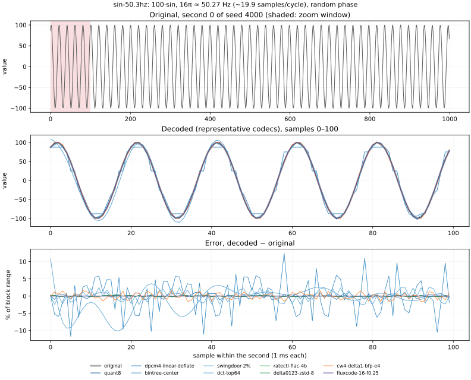
Uniform noise ±10 + Gaussian spikes (σ = 10 samples, peak 1000), 180 per minute at random times. 5 one-minute signals; the plots show second 32 of the first (seed 5000), full scale 1995. Rows are in legend order.
| codec | bytes/block | ratio | RMSE median / worst | mean err median / worst | max err median / worst | min err median / worst | max |err| median / worst | peak shift (samples, plotted second) | notes |
|---|---|---|---|---|---|---|---|---|---|
pwlinear-minmax16-merged | 273 | 29.3× | 2.23% / 38.9% | +0.235% / +3% | +0% / +2.2e-14% | +0% / +0% | 12.1% / 97.6% | +0, +0, +0, +0, +0, +0 | 127 knots per block |
swingdoor-0.5% | 891 | 9.0× | 0.315% / 0.347% | +0.00206% / +0.0529% | +0% / -0.659% | +0% / +0.0488% | 0.879% / 0.965% | +0, -1, +0, +0, +0, +1 | 437 knots per block |
swingdoor-2% | 220 | 36.4× | 0.92% / 1.37% | +0.106% / +0.32% | -0.0855% / -2.71% | +0.0244% / +0.293% | 3.18% / 3.84% | +0, -2, +0, +2, +2, -2 | 101 knots per block |
dct-top64 | 216 | 37.0× | 0.872% / 24.2% | +0% / -1.58% | -1.57% / -44.6% | -0.76% / -6.04% | 3.27% / 78.4% | +2, +0, +0, +0, +0, +0 | |
pwlinear-minmax16 | 285 | 28.1× | 2.03% / 38.9% | +0.178% / +3% | +0% / +2.2e-14% | +0% / +0% | 11.2% / 97.6% | +0, +0, +0, +0, +0, +0 | 133 knots per block |
pchip-minmax16 | 285 | 28.1× | 1.11% / 41.5% | +0.129% / +2.97% | +0% / +2.2e-14% | +0% / +0% | 6.42% / 99.4% | +0, +0, +0, +0, +0, +0 | 133 knots per block |
bintree-center | 392 | 20.4× | 0.861% / 10.6% | +0.0645% / +1.48% | -1.56% / -6.25% | +0.195% / +6.25% | 6.09% / 25% | +0, -1, +0, -1, -1, -1 | codes 00/01/10/11 per block: 291/155/484/71 |
bintree-edge | 392 | 20.4× | 2.07% / 19.4% | +0.0199% / +1.18% | +0% / +1.12e-14% | +0% / +0% | 12.3% / 50% | +0, -1, +0, -3, -3, -1 | |
dpcm4-linear-deflate | 321 | 25.0× | 0.298% / 4.14% | -0.000699% / +0.183% | +0.036% / -5.39% | +0.0533% / +6.81% | 0.523% / 7.12% | +0, -1, +0, +0, +0, +0 | |
dpcm4-cubic-deflate | 459 | 17.4× | 0.223% / 5.38% | +0.000744% / -0.288% | +0.00224% / +14.3% | -0.329% / -15.2% | 1.16% / 16.1% | +0, +0, +0, +0, +0, +0 | |
quant6-delta1-deflate | 266 | 30.1× | 0.431% / 0.521% | -0.0319% / -0.219% | +0% / -1.18e-14% | +0% / +0% | 0.793% / 0.794% | +0, -1, +0, +0, +0, -1 | |
dpcm6-linear-deflate | 622 | 12.9× | 0.068% / 0.921% | +4.77e-05% / -0.0309% | +0.00189% / -1.28% | +0.00434% / +1.47% | 0.118% / 1.61% | +0, +0, +0, +0, +0, +0 | |
dpcm6-cubic-deflate | 731 | 10.9× | 0.0502% / 1.2% | -1.25e-05% / +0.0971% | +0.00468% / +3.06% | -0.0566% / -2.93% | 0.267% / 3.9% | +0, +0, +0, +0, +0, +0 | |
dpcm6-mulaw-deflate | 718 | 11.1× | 0.0471% / 1.09% | +6.99e-05% / -0.0392% | +0.00124% / +2.47% | -0.0527% / -3.38% | 0.235% / 3.69% | +0, +0, +0, +0, +0, +0 | |
quant8 | 1016 | 7.9× | 0.113% / 0.117% | -0.0009% / -0.0192% | +0% / +1.12e-14% | +0% / +0% | 0.196% / 0.196% | +0, -1, +0, +0, +0, +0 | |
quant8-delta1-deflate | 539 | 14.8× | 0.113% / 0.117% | -0.0009% / -0.0192% | +0% / +1.12e-14% | +0% / +0% | 0.196% / 0.196% | +0, -1, +0, +0, +0, +0 | |
gorilla-xor | 8247 | 1.0× | 0% / 0% | +0% / +0% | +0% / +0% | +0% / +0% | 0% / 0% | +0, +0, +0, +0, +0, +0 | per block: same 0, reuse window 994, new window 5 |
cw-delta1-tree-2 | 404 | 19.8× | 0.504% / 22% | +0.000141% / -1.07% | +0.114% / +47.1% | -0.854% / -45.7% | 1.82% / 74.8% | +0, +0, +0, +0, +0, -1 | halving bits set 29%, leaves at code limit 43% |
cw4-delta1-bfp-e4 | 552 | 14.5× | 0.187% / 1.96% | -8.99e-05% / +0.124% | +0.227% / +3.15% | -0.082% / +3.15% | 0.827% / 3.33% | +0, -1, +0, +0, +0, -1 | frame exponents: mean 3.9, max 6 |
cw-delta1-tree-4 | 654 | 12.2× | 0.1% / 2.85% | +0.000273% / +0.0949% | +0.00423% / +5.9% | -0.0824% / -5.69% | 0.517% / 6.76% | +0, +0, +0, +0, +0, +0 | halving bits set 27%, leaves at code limit 4% |
cw6-delta1-bfp-e4 | 802 | 10.0× | 0.0421% / 0.461% | +3.26e-06% / +0.0205% | +0.0164% / -0.685% | -0.0159% / -0.685% | 0.197% / 0.794% | +0, +0, +0, +0, +0, +0 | frame exponents: mean 4.1, max 7 |
cw8-delta1-linear | 1023 | 7.8× | 0.0167% / 0.229% | -6.34e-05% / -0.0186% | +0.000683% / -0.255% | +0.000501% / +0.343% | 0.0288% / 0.392% | +0, +0, +0, +0, +0, +0 | |
cw8-delta1-sqrt | 1019 | 7.9× | 0.0324% / 0.184% | +0.000602% / -0.0103% | -0.0373% / -0.286% | +0.00529% / +0.103% | 0.181% / 0.728% | +0, +0, +0, +0, +0, +0 | 54% of samples use a finer-than-7-bit delta |
cw8-delta1-bfp-e2 | 1035 | 7.7× | 0.0158% / 0.114% | +1.51e-05% / +0.0058% | +0.00115% / +0.124% | +9.7e-06% / +0.124% | 0.0486% / 0.196% | +0, +0, +0, +0, +0, +0 | frame exponents: mean 2.8, max 3 |
cw8-delta1-bfp-e4 | 1051 | 7.6× | 0.0101% / 0.114% | +1.74e-05% / +0.0058% | +0.000854% / +0.124% | -0.00266% / +0.124% | 0.0486% / 0.196% | +0, +0, +0, +0, +0, +0 | frame exponents: mean 4.2, max 7 |
cw-delta1-tree-7 | 1029 | 7.8× | 0.0116% / 0.351% | -2.05e-05% / +0.0216% | +0.00167% / +0.746% | -0.00639% / -0.636% | 0.0573% / 0.778% | +0, +0, +0, +0, +0, +0 | halving bits set 27%, leaves at code limit 1% |
ratectl-delta0123-zstd-4b | 500 | 16.0× | 0.131% / 0.168% | -0.0063% / -0.0268% | -0.00538% / -0.283% | +0% / +0% | 0.232% / 0.283% | +0, +0, +0, +0, +0, +0 | |
ratectl-flac-4b | 500 | 16.0× | 0.119% / 0.154% | -0.00207% / -0.0206% | -0.183% / -0.221% | +0% / +0% | 0.204% / 0.256% | +0, -1, +0, +0, +0, +0 | |
delta0123-zstd-8 | 550 | 14.5× | 0.113% / 0.232% | -0.000998% / -0.0192% | +0% / +0% | +0% / +0% | 0.196% / 0.394% | +0, -1, +0, +0, +0, +0 | orders 0: 9, 1: 52, 2: 239; B lowered by the cap on 8 blocks (to 7) |
delta12-zstd-8 | 549 | 14.6× | 0.113% / 0.232% | -0.000998% / -0.0192% | +0% / +0% | +0% / +0% | 0.196% / 0.394% | +0, -1, +0, +0, +0, +0 | orders 1: 61, 2: 239; B lowered by the cap on 8 blocks (to 7) |
delta0123-zstd-10 | 777 | 10.3× | 0.0282% / 0.232% | -0.000221% / +0.0144% | +0% / +0% | +0% / +0% | 0.0488% / 0.394% | +0, +0, +0, +0, +0, +0 | orders 0: 9, 1: 49, 2: 242; B lowered by the cap on 9 blocks (to 7) |
delta0123-zstd-12 | 1013 | 7.9× | 0.00704% / 0.232% | +4.94e-06% / +0.0144% | +0% / +0% | +0% / +0% | 0.0122% / 0.394% | +0, +0, +0, +0, +0, +0 | orders 0: 9, 1: 49, 2: 242; B lowered by the cap on 13 blocks (to 7) |
fluxcode-10 | 741 | 10.8× | 0.0285% / 0.0576% | +1.3e-05% / -0.0028% | -0.00228% / -0.0914% | -0.00186% / +0.0801% | 0.0492% / 0.0975% | +0, +0, +0, +0, +0, +0 | orders 0: 108, 1: 7, 2: 185; step 2^-5..2^2 |
fluxcode-12 | 999 | 8.0× | 0.00714% / 0.0144% | -2.87e-06% / +0.000714% | +0.000449% / +0.0223% | -0.00178% / +0.0194% | 0.0123% / 0.0244% | +0, +0, +0, +0, +0, +0 | orders 0: 108, 1: 9, 2: 183; step 2^-7..2^0 |
fluxcode-16 | 1505 | 5.3× | 0.000447% / 0.000895% | -6.04e-07% / -5.8e-05% | -5.78e-05% / -0.00144% | -0.000103% / +0.00149% | 0.000769% / 0.00152% | +0, +0, +0, +0, +0, +0 | orders 0: 108, 1: 9, 2: 183; step 2^-11..2^-4 |
fluxcode-16-f0.01 | 1377 | 5.8× | 0.000885% / 0.0913% | -6.13e-07% / -0.00494% | -4.83e-05% / +0.103% | -0.000219% / -0.145% | 0.00154% / 0.157% | +0, +0, +0, +0, +0, +0 | orders 0: 108, 1: 9, 2: 183; step 2^-6..2^-4 (noise floor applied on 235 blocks) |
fluxcode-16-f0.03 | 1160 | 6.9× | 0.00354% / 0.185% | +5.39e-06% / -0.00337% | +0.000331% / +0.168% | -0.00126% / -0.288% | 0.00614% / 0.313% | +0, +0, +0, +0, +0, +0 | orders 0: 108, 1: 9, 2: 183; step 2^-6..2^-3 (noise floor applied on 273 blocks) |
fluxcode-16-f0.1 | 933 | 8.6× | 0.0141% / 0.74% | +1.06e-05% / +0.043% | +0.00153% / +0.168% | -0.00166% / -0.288% | 0.0246% / 1.25% | +0, +0, +0, +0, +0, +0 | orders 0: 108, 1: 8, 2: 184; step 2^-6..2^-1 (noise floor applied on 273 blocks) |
fluxcode-16-f0.25 | 821 | 9.7× | 0.0283% / 0.74% | -3.57e-06% / +0.043% | -0.000344% / -0.652% | -0.00166% / -0.288% | 0.0491% / 1.25% | +0, +0, +0, +0, +0, +0 | orders 0: 108, 1: 7, 2: 185; step 2^-6..2^0 (noise floor applied on 273 blocks) |
fluxcode-16-f0.5 | 703 | 11.4× | 0.0567% / 0.74% | +1.2e-05% / +0.043% | +0.00482% / -0.652% | -0.00166% / -0.288% | 0.0982% / 1.25% | +0, +0, +0, +0, +0, +0 | orders 0: 108, 1: 8, 2: 184; step 2^-6..2^1 (noise floor applied on 273 blocks) |
fluxcode-16-f1 | 587 | 13.6× | 0.113% / 0.74% | +0.000261% / +0.043% | -0.00066% / -0.652% | +0.194% / +0.429% | 0.196% / 1.25% | +0, +0, +0, +0, +0, +0 | orders 0: 108, 1: 7, 2: 185; step 2^-6..2^2 (noise floor applied on 273 blocks) |
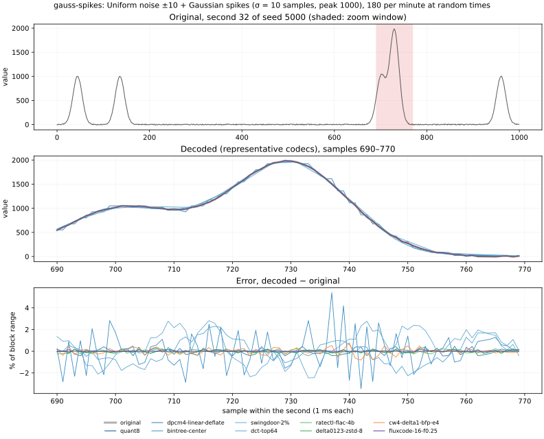
Uniform noise ±10 + single-sample impulses of +500, 180 per minute at random samples. 5 one-minute signals; the plots show second 56 of the first (seed 6000), full scale 519.7. Rows are in legend order.
| codec | bytes/block | ratio | RMSE median / worst | mean err median / worst | max err median / worst | min err median / worst | max |err| median / worst | peak shift (samples, plotted second) | notes |
|---|---|---|---|---|---|---|---|---|---|
pwlinear-minmax16-merged | 289 | 27.7× | 10.1% / 40.3% | +1.54% / +6.16% | +0% / -1.11e-14% | +0% / +0% | 90% / 99.3% | +0, +0 | 135 knots per block |
swingdoor-0.5% | 1411 | 5.7× | 0.243% / 0.265% | +0.000904% / +0.0259% | +0% / -1.11e-14% | +0% / +0.0244% | 0.838% / 0.93% | +0, +0 | 696 knots per block |
swingdoor-2% | 310 | 25.8× | 1.25% / 1.32% | -0.00181% / -0.226% | +0% / -1.11e-14% | +0.0244% / +0.195% | 3.36% / 3.73% | +0, +0 | 146 knots per block |
dct-top64 | 216 | 37.0× | 4.6% / 24.9% | -0.125% / +1.4% | -70.4% / -83% | -3.56% / -17% | 71.1% / 83% | +0, +0 | |
pwlinear-minmax16 | 289 | 27.7× | 10.1% / 40.3% | +1.54% / +6.16% | +0% / -1.11e-14% | +0% / +0% | 90% / 99.3% | +0, +0 | 135 knots per block |
pchip-minmax16 | 289 | 27.7× | 10.9% / 42.6% | +1.55% / +6.23% | +0% / -1.11e-14% | +0% / -3.44e-16% | 96% / 99.5% | +0, +0 | 135 knots per block |
bintree-center | 392 | 20.4× | 2.15% / 10.8% | +0.317% / -0.674% | -25% / -25% | +0.391% / +6.25% | 25% / 25% | +0, +0 | codes 00/01/10/11 per block: 419/137/404/41 |
bintree-edge | 392 | 20.4× | 1.22% / 19.8% | +0.0309% / -0.924% | +0% / -1.11e-14% | +0% / +0% | 3.83% / 50% | +0, +0 | |
dpcm4-linear-deflate | 56 | 142.2× | 1.57% / 4.21% | +0.00144% / -2.01% | +0.806% / -5.84% | +1.9% / -6.61% | 3.49% / 7.07% | +0, +0 | |
dpcm4-cubic-deflate | 230 | 34.7× | 0.857% / 5.44% | +0.00804% / +0.294% | +1.98% / +15.7% | +0.181% / -14.4% | 3.44% / 15.9% | +0, +0 | |
quant6-delta1-deflate | 342 | 23.4× | 0.45% / 0.473% | -0.0621% / -0.111% | +0% / -1.11e-14% | +0% / +0% | 0.793% / 0.794% | +0, +0 | |
dpcm6-linear-deflate | 242 | 33.1× | 0.883% / 1.06% | +0.00267% / +0.249% | -0.0635% / +1.59% | +0.148% / +1.59% | 1.6% / 1.61% | +0, +0 | |
dpcm6-cubic-deflate | 508 | 15.7× | 0.245% / 1.21% | +0.00228% / +0.0562% | +1.54% / +3.67% | -0.304% / -3.42% | 3.19% / 4.04% | +0, +0 | |
dpcm6-mulaw-deflate | 430 | 18.6× | 0.33% / 1.07% | +0.0016% / +0.0925% | +1.37% / +3.62% | -0.474% / -3.31% | 2.97% / 3.69% | +0, +0 | |
quant8 | 1016 | 7.9× | 0.113% / 0.118% | -0.000516% / +0.0104% | +0% / -1.11e-14% | +0% / +0% | 0.196% / 0.196% | +0, +0 | |
quant8-delta1-deflate | 626 | 12.8× | 0.113% / 0.118% | -0.000516% / +0.0104% | +0% / -1.11e-14% | +0% / +0% | 0.196% / 0.196% | +0, +0 | |
gorilla-xor | 8255 | 1.0× | 0% / 0% | +0% / +0% | +0% / +0% | +0% / +0% | 0% / 0% | +0, +0 | per block: same 0, reuse window 996, new window 3 |
cw-delta1-tree-2 | 404 | 19.8× | 1.07% / 21.7% | +0.0182% / -1.95% | +1.9% / -50.6% | -2.77% / -49.5% | 5.07% / 74.6% | +0, +0 | halving bits set 54%, leaves at code limit 41% |
cw4-delta1-bfp-e4 | 552 | 14.5× | 0.42% / 1.99% | -0.00089% / -0.129% | +1.8% / -3.33% | -0.282% / -3.29% | 3.23% / 3.33% | +0, +0 | frame exponents: mean 2.9, max 5 |
cw-delta1-tree-4 | 654 | 12.2× | 0.293% / 2.84% | -0.00231% / +0.165% | +0.142% / -12.1% | -0.441% / -5.78% | 3.41% / 12.1% | +0, +0 | halving bits set 50%, leaves at code limit 4% |
cw6-delta1-bfp-e4 | 802 | 10.0× | 0.108% / 0.474% | -3.97e-05% / +0.0409% | +0.193% / +0.793% | -0.0931% / -0.745% | 0.783% / 0.794% | +0, +0 | frame exponents: mean 3.1, max 5 |
cw8-delta1-linear | 1023 | 7.8× | 0.225% / 0.235% | -0.000258% / +0.0203% | -0.00232% / +0.391% | -0.0077% / -0.389% | 0.389% / 0.394% | +0, +0 | |
cw8-delta1-sqrt | 1019 | 7.9× | 0.0399% / 0.181% | +0.000737% / +0.00824% | -0.0719% / -0.295% | +0.00744% / +0.224% | 0.161% / 0.775% | +0, +0 | 32% of samples use a finer-than-7-bit delta |
cw8-delta1-bfp-e2 | 1035 | 7.7× | 0.0286% / 0.114% | +5.33e-05% / -0.00935% | +0.0185% / -0.195% | -0.0105% / -0.184% | 0.193% / 0.196% | +0, +0 | frame exponents: mean 2.7, max 3 |
cw8-delta1-bfp-e4 | 1051 | 7.6× | 0.0271% / 0.114% | +6.18e-05% / -0.00935% | +0.0185% / -0.196% | -0.0118% / -0.184% | 0.193% / 0.196% | +0, +0 | frame exponents: mean 3.2, max 5 |
cw-delta1-tree-7 | 1029 | 7.8× | 0.0486% / 0.343% | +2.67e-05% / -0.0158% | +0.0843% / -1.55% | -0.0295% / -0.742% | 0.715% / 1.55% | +0, +0 | halving bits set 50%, leaves at code limit 1% |
ratectl-delta0123-zstd-4b | 500 | 16.0× | 0.201% / 0.212% | -0.00988% / -0.0285% | -0.177% / -0.351% | +0% / +0% | 0.345% / 0.351% | +0, +0 | |
ratectl-flac-4b | 500 | 16.0× | 0.256% / 0.282% | -0.00688% / -0.0341% | -0.161% / -0.474% | +0% / +0% | 0.449% / 0.477% | +0, +0 | |
delta0123-zstd-8 | 574 | 13.9× | 0.114% / 0.234% | -0.000674% / -0.0106% | +0% / +0% | +0% / +0% | 0.196% / 0.394% | +0, +0 | orders 0: 300; B lowered by the cap on 15 blocks (to 7) |
delta12-zstd-8 | 626 | 12.8× | 0.114% / 0.234% | -0.000674% / -0.0106% | +0% / +0% | +0% / +0% | 0.196% / 0.394% | +0, +0 | orders 1: 300; B lowered by the cap on 15 blocks (to 7) |
delta0123-zstd-10 | 744 | 10.7× | 0.0285% / 0.234% | -0.000211% / -0.0106% | +0% / +0% | +0% / +0% | 0.0489% / 0.394% | +0, +0 | orders 0: 300; B lowered by the cap on 115 blocks (to 7) |
delta0123-zstd-12 | 744 | 10.7× | 0.0285% / 0.234% | -0.000211% / -0.0106% | +0% / +0% | +0% / +0% | 0.0489% / 0.394% | +0, +0 | orders 0: 300; B lowered by the cap on 300 blocks (to 7) |
fluxcode-10 | 690 | 11.6× | 0.0554% / 0.058% | -3.62e-05% / -0.00444% | +0.00392% / +0.0963% | -0.00315% / -0.0784% | 0.0963% / 0.0976% | +0, +0 | orders 0: 300; step 2^-5..2^0 |
fluxcode-12 | 954 | 8.4× | 0.0139% / 0.0147% | +3.48e-06% / -0.0014% | +0.000321% / -0.0242% | -0.0028% / +0.0233% | 0.0241% / 0.0244% | +0, +0 | orders 0: 300; step 2^-7..2^-2 |
fluxcode-16 | 1455 | 5.5× | 0.000866% / 0.000912% | +2.35e-07% / +7e-05% | -8.79e-05% / -0.00151% | -0.000139% / -0.00149% | 0.00151% / 0.00152% | +0, +0 | orders 0: 300; step 2^-11..2^-6 |
fluxcode-16-f0.01 | 1263 | 6.3× | 0.00176% / 0.0898% | -2.47e-06% / -0.00294% | +0.000107% / +0.0744% | -0.000614% / -0.107% | 0.00303% / 0.156% | +0, +0 | orders 0: 300; step 2^-5..2^-4 (noise floor applied on 300 blocks) |
fluxcode-16-f0.03 | 1015 | 7.9× | 0.00702% / 0.185% | +2.03e-05% / -0.0112% | +0.000533% / +0.298% | -0.00261% / +0.296% | 0.0121% / 0.314% | +0, +0 | orders 0: 300; step 2^-3 (noise floor applied on 300 blocks) |
fluxcode-16-f0.1 | 696 | 11.5× | 0.028% / 0.74% | -8.09e-05% / -0.0359% | +0.00648% / +0.359% | -0.00319% / -0.392% | 0.0484% / 1.25% | +0, +0 | orders 0: 300; step 2^-1 (noise floor applied on 300 blocks) |
fluxcode-16-f0.25 | 593 | 13.5× | 0.0561% / 0.74% | +5.17e-05% / -0.0359% | +0.00731% / +0.359% | -0.00319% / -0.392% | 0.0969% / 1.25% | +0, +0 | orders 0: 300; step 2^-1..2^0 (noise floor applied on 300 blocks) |
fluxcode-16-f0.5 | 510 | 15.7× | 0.112% / 0.74% | -0.000201% / -0.0359% | +0.0313% / +0.359% | -0.00319% / -0.392% | 0.194% / 1.25% | +0, +0 | orders 0: 300; step 2^-1..2^1 (noise floor applied on 300 blocks) |
fluxcode-16-f1 | 378 | 21.2× | 0.225% / 0.74% | +0.00114% / -0.0359% | -0.0354% / -0.388% | +0.385% / +0.399% | 0.388% / 1.25% | +0, +0 | orders 0: 300; step 2^-1..2^2 (noise floor applied on 300 blocks) |
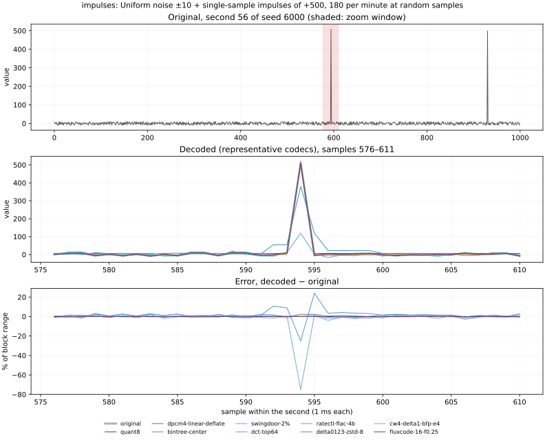
±100 square wave, √5 ≈ 2.236 Hz (hard edges). 5 one-minute signals; the plots show second 0 of the first (seed 7000), full scale 200. Rows are in legend order.
| codec | bytes/block | ratio | RMSE median / worst | mean err median / worst | max err median / worst | min err median / worst | max |err| median / worst | notes |
|---|---|---|---|---|---|---|---|---|
pwlinear-minmax16-merged | 154 | 51.8× | 10.2% / 15.3% | +0% / -0.8% | +0% / +0% | +0% / +0% | 90% / 93.8% | 68 knots per block |
swingdoor-0.5% | 156 | 51.4× | 0% / 0% | +0% / +0% | +0% / +0% | +0% / +0% | 0% / 0% | 69 knots per block |
swingdoor-2% | 156 | 51.4× | 0% / 0% | +0% / +0% | +0% / +0% | +0% / +0% | 0% / 0% | 69 knots per block |
dct-top64 | 216 | 37.0× | 5.63% / 6.01% | +3.04e-05% / -0.7% | +14.9% / +33.6% | -14.6% / -33.6% | 47% / 71.2% | |
pwlinear-minmax16 | 154 | 51.8× | 10.2% / 15.3% | +0% / -0.8% | +0% / +0% | +0% / +0% | 90% / 93.8% | 68 knots per block |
pchip-minmax16 | 154 | 51.8× | 10.8% / 16.7% | +0% / -0.941% | +0% / +1.42e-14% | +0% / +0% | 97.2% / 99.5% | 68 knots per block |
bintree-center | 392 | 20.4× | 2.37% / 2.73% | +0% / -0.216% | -0.195% / -0.195% | +0.195% / +0.195% | 25% / 25% | codes 00/01/10/11 per block: 34/0/484/483 |
bintree-edge | 392 | 20.4× | 0% / 0% | +0% / +0% | +0% / +0% | +0% / +0% | 0% / 0% | |
dpcm4-linear-deflate | 6 | 1429.4× | 0% / 0% | +0% / +0% | +0% / +0% | +0% / +0% | 0% / 0% | |
dpcm4-cubic-deflate | 6 | 1429.4× | 0% / 0% | +0% / +0% | +0% / +0% | +0% / +0% | 0% / 0% | |
quant6-delta1-deflate | 6 | 1291.0× | 0% / 0% | +0% / +0% | +0% / +0% | +0% / +0% | 0% / 0% | |
dpcm6-linear-deflate | 6 | 1425.2× | 0% / 0% | +0% / +0% | +0% / +0% | +0% / +0% | 0% / 0% | |
dpcm6-cubic-deflate | 6 | 1425.2× | 0% / 0% | +0% / +0% | +0% / +0% | +0% / +0% | 0% / 0% | |
dpcm6-mulaw-deflate | 6 | 1425.2× | 1.9e-14% / 2.11e-14% | +6.22e-15% / +1.07e-14% | +0% / -2.84e-14% | +2.84e-14% / +2.84e-14% | 2.84e-14% / 2.84e-14% | |
quant8 | 1016 | 7.9× | 0% / 0% | +0% / +0% | +0% / +0% | +0% / +0% | 0% / 0% | |
quant8-delta1-deflate | 6 | 1291.0× | 0% / 0% | +0% / +0% | +0% / +0% | +0% / +0% | 0% / 0% | |
gorilla-xor | 138 | 58.0× | 0% / 0% | +0% / +0% | +0% / +0% | +0% / +0% | 0% / 0% | per block: same 995, reuse window 3, new window 1 |
cw-delta1-tree-2 | 404 | 19.8× | 0% / 0% | +0% / +0% | +0% / +0% | +0% / +0% | 0% / 0% | halving bits set 96%, leaves at code limit 0% |
cw4-delta1-bfp-e4 | 552 | 14.5× | 0% / 0% | +0% / +0% | +0% / +0% | +0% / +0% | 0% / 0% | frame exponents: mean 13.9, max 15 |
cw-delta1-tree-4 | 654 | 12.2× | 1.73e-08% / 6.92e-08% | -1.04e-08% / +5.14e-08% | +0% / +9.31e-08% | -2.33e-08% / -2.33e-08% | 2.33e-08% / 9.31e-08% | halving bits set 96%, leaves at code limit 0% |
cw6-delta1-bfp-e4 | 802 | 10.0× | 0% / 0% | +0% / +0% | +0% / +0% | +0% / +0% | 0% / 0% | frame exponents: mean 13.9, max 15 |
cw8-delta1-linear | 1023 | 7.8× | 0% / 0% | +0% / +0% | +0% / +0% | +0% / +0% | 0% / 0% | |
cw8-delta1-sqrt | 1019 | 7.9× | 0.00411% / 0.00457% | +0.00273% / +0.00339% | +0% / -0.0061% | +0.0061% / +0.0061% | 0.0122% / 0.0122% | 100% of samples use a finer-than-7-bit delta |
cw8-delta1-bfp-e2 | 1035 | 7.7× | 0% / 0% | +0% / +0% | +0% / +0% | +0% / +0% | 0% / 0% | frame exponents: mean 2.8, max 3 |
cw8-delta1-bfp-e4 | 1051 | 7.6× | 0% / 0% | +0% / +0% | +0% / +0% | +0% / +0% | 0% / 0% | frame exponents: mean 13.9, max 15 |
cw-delta1-tree-7 | 1029 | 7.8× | 1.73e-08% / 1.04e-06% | -1.04e-08% / +7.71e-07% | +0% / +1.4e-06% | -2.33e-08% / -2.33e-08% | 2.33e-08% / 1.4e-06% | halving bits set 96%, leaves at code limit 0% |
ratectl-delta0123-zstd-4b | 28 | 282.3× | 1.36e-08% / 1.43e-08% | -9.6e-09% / -1.06e-08% | -1.91e-08% / -1.91e-08% | +0% / +0% | 1.91e-08% / 1.91e-08% | |
ratectl-flac-4b | 160 | 49.9× | 0.00108% / 0.00113% | -0.000764% / -0.000844% | -0.00152% / -0.00152% | +0% / +0% | 0.00152% / 0.00152% | |
delta0123-zstd-8 | 9 | 883.0× | 0% / 0% | +0% / +0% | +0% / +0% | +0% / +0% | 0% / 0% | orders 1: 300 |
delta12-zstd-8 | 9 | 883.0× | 0% / 0% | +0% / +0% | +0% / +0% | +0% / +0% | 0% / 0% | orders 1: 300 |
delta0123-zstd-10 | 9 | 883.0× | 0% / 0% | +0% / +0% | +0% / +0% | +0% / +0% | 0% / 0% | orders 1: 300; B lowered by the cap on 300 blocks (to 9) |
delta0123-zstd-12 | 9 | 883.0× | 0% / 0% | +0% / +0% | +0% / +0% | +0% / +0% | 0% / 0% | orders 1: 300; B lowered by the cap on 300 blocks (to 9) |
fluxcode-10 | 5 | 1493.5× | 0% / 0% | +0% / +0% | +0% / +0% | +0% / +0% | 0% / 0% | orders 1: 300; decimal grid 10^2 |
fluxcode-12 | 5 | 1493.5× | 0% / 0% | +0% / +0% | +0% / +0% | +0% / +0% | 0% / 0% | orders 1: 300; decimal grid 10^2 |
fluxcode-16 | 5 | 1493.5× | 0% / 0% | +0% / +0% | +0% / +0% | +0% / +0% | 0% / 0% | orders 1: 300; decimal grid 10^2 |
fluxcode-16-f0.01 | 5 | 1493.5× | 0% / 0% | +0% / +0% | +0% / +0% | +0% / +0% | 0% / 0% | orders 1: 300; decimal grid 10^2 |
fluxcode-16-f0.03 | 5 | 1493.5× | 0% / 0% | +0% / +0% | +0% / +0% | +0% / +0% | 0% / 0% | orders 1: 300; decimal grid 10^2 |
fluxcode-16-f0.1 | 5 | 1493.5× | 0% / 0% | +0% / +0% | +0% / +0% | +0% / +0% | 0% / 0% | orders 1: 300; decimal grid 10^2 |
fluxcode-16-f0.25 | 5 | 1493.5× | 0% / 0% | +0% / +0% | +0% / +0% | +0% / +0% | 0% / 0% | orders 1: 300; decimal grid 10^2 |
fluxcode-16-f0.5 | 5 | 1493.5× | 0% / 0% | +0% / +0% | +0% / +0% | +0% / +0% | 0% / 0% | orders 1: 300; decimal grid 10^2 |
fluxcode-16-f1 | 5 | 1493.5× | 0% / 0% | +0% / +0% | +0% / +0% | +0% / +0% | 0% / 0% | orders 1: 300; decimal grid 10^2 |
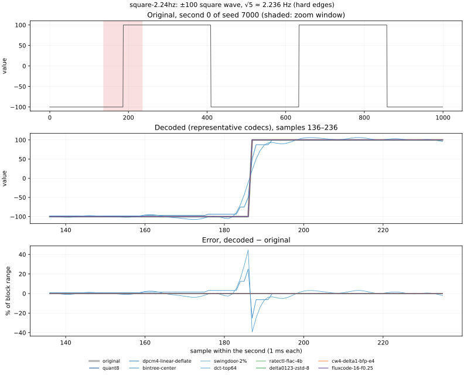
Gaussian random walk, σ = 1 per step. 5 one-minute signals; the plots show second 0 of the first (seed 8000), full scale 23.12. Rows are in legend order.
| codec | bytes/block | ratio | RMSE median / worst | mean err median / worst | max err median / worst | min err median / worst | max |err| median / worst | notes |
|---|---|---|---|---|---|---|---|---|
pwlinear-minmax16-merged | 273 | 29.3× | 2.39% / 5.05% | -0.00795% / -0.654% | +0% / +1.08e-14% | +0% / +0% | 9.32% / 25.2% | 128 knots per block |
swingdoor-0.5% | 1350 | 5.9× | 0.245% / 0.322% | -0.000139% / +0.0262% | +0% / -0.366% | +0% / +0.513% | 0.832% / 0.945% | 666 knots per block |
swingdoor-2% | 496 | 16.1× | 1.38% / 1.46% | -6.43e-05% / -0.193% | -0.0733% / -2.93% | +0.0244% / +3.17% | 3.56% / 3.83% | 239 knots per block |
dct-top64 | 216 | 37.0× | 2.22% / 4.79% | +0% / -0.0529% | -2.39% / -9.26% | +2.23% / +7.66% | 7.5% / 16.2% | |
pwlinear-minmax16 | 275 | 29.0× | 2.38% / 5.05% | -0.00739% / -0.654% | +0% / +1.08e-14% | +0% / +0% | 9.32% / 25.2% | 129 knots per block |
pchip-minmax16 | 275 | 29.0× | 2.71% / 5.89% | -0.00766% / -0.75% | +0% / +4.31e-14% | +0% / +0% | 10% / 26.8% | 129 knots per block |
bintree-center | 392 | 20.4× | 0.865% / 1.9% | -0.00045% / +0.195% | -0.781% / -3.13% | +0.781% / +3.13% | 3.12% / 12.3% | codes 00/01/10/11 per block: 265/324/206/206 |
bintree-edge | 392 | 20.4× | 2% / 4.41% | -0.000519% / +0.189% | +0% / +1.08e-14% | +0% / +0% | 6.24% / 24.8% | |
dpcm4-linear-deflate | 492 | 16.3× | 0.311% / 0.703% | +0.00136% / +0.0461% | +0% / +0.89% | +0% / +0.922% | 0.541% / 1.21% | |
dpcm4-cubic-deflate | 555 | 14.4× | 0.302% / 0.641% | +0.000982% / +0.044% | +0.0143% / +1.37% | +0% / -1.55% | 1.14% / 2.43% | |
quant6-delta1-deflate | 434 | 18.4× | 0.458% / 0.478% | +0.00144% / +0.0554% | +0% / +1.08e-14% | +0% / +0% | 0.793% / 0.794% | |
dpcm6-linear-deflate | 710 | 11.3× | 0.0698% / 0.161% | -0.000105% / -0.00811% | -0.00223% / -0.186% | +1.77e-05% / +0.265% | 0.122% / 0.274% | |
dpcm6-cubic-deflate | 753 | 10.6× | 0.0689% / 0.146% | -0.000164% / +0.0119% | -0.00291% / -0.378% | +0.000368% / -0.278% | 0.255% / 0.593% | |
dpcm6-mulaw-deflate | 755 | 10.6× | 0.0601% / 0.128% | +0.000194% / -0.00693% | -0.00995% / -0.278% | +0% / -0.306% | 0.227% / 0.535% | |
quant8 | 1016 | 7.9× | 0.113% / 0.118% | +0.000225% / -0.00977% | +0% / +1.08e-14% | +0% / +0% | 0.196% / 0.196% | |
quant8-delta1-deflate | 666 | 12.0× | 0.113% / 0.118% | +0.000225% / -0.00977% | +0% / +1.08e-14% | +0% / +0% | 0.196% / 0.196% | |
gorilla-xor | 6840 | 1.2× | 0% / 0% | +0% / +0% | +0% / +0% | +0% / +0% | 0% / 0% | per block: same 0, reuse window 986, new window 13 |
cw-delta1-tree-2 | 404 | 19.8× | 1.08% / 2.41% | -0.0001% / +0.126% | +0.13% / +5% | -0.133% / -5.69% | 3.9% / 10.2% | halving bits set 35%, leaves at code limit 36% |
cw4-delta1-bfp-e4 | 552 | 14.5× | 0.29% / 0.641% | +0.000982% / -0.0378% | +0.0331% / +1.19% | +0% / -0.83% | 0.83% / 1.67% | frame exponents: mean 2.8, max 5 |
cw-delta1-tree-4 | 654 | 12.2× | 0.163% / 0.341% | -0.000139% / +0.0225% | +0% / +0.818% | +0.013% / -1.1% | 0.516% / 1.47% | halving bits set 31%, leaves at code limit 4% |
cw6-delta1-bfp-e4 | 802 | 10.0× | 0.0628% / 0.131% | +6.41e-05% / +0.00837% | +3.31e-15% / -0.203% | +0% / -0.195% | 0.197% / 0.395% | frame exponents: mean 3.0, max 5 |
cw8-delta1-linear | 1023 | 7.8× | 0.0172% / 0.0395% | +3.74e-05% / +0.00194% | +0.00176% / +0.0653% | -0.00149% / -0.0542% | 0.0298% / 0.0668% | |
cw8-delta1-sqrt | 1019 | 7.9× | 0.0435% / 0.065% | -5.55e-05% / +0.00479% | -0.0608% / -0.373% | +0.0637% / +0.341% | 0.177% / 0.373% | 28% of samples use a finer-than-7-bit delta |
cw8-delta1-bfp-e2 | 1035 | 7.7× | 0.0155% / 0.032% | -4.8e-06% / -0.00277% | -0.000739% / -0.0552% | +0% / -0.0488% | 0.0485% / 0.0976% | frame exponents: mean 2.8, max 3 |
cw8-delta1-bfp-e4 | 1051 | 7.6× | 0.0153% / 0.032% | -1.35e-05% / -0.00277% | -0.0015% / -0.0552% | -0.00137% / -0.0488% | 0.0485% / 0.0976% | frame exponents: mean 3.0, max 6 |
cw-delta1-tree-7 | 1029 | 7.8× | 0.019% / 0.0404% | +4.52e-05% / +0.00304% | -0.0014% / +0.0863% | -0.00144% / -0.103% | 0.0595% / 0.132% | halving bits set 31%, leaves at code limit 1% |
ratectl-delta0123-zstd-4b | 500 | 16.0× | 0.284% / 0.299% | +0.00103% / +0.0269% | +0.156% / -0.441% | +0% / +0% | 0.492% / 0.503% | |
ratectl-flac-4b | 500 | 16.0× | 0.215% / 0.226% | -0.000173% / +0.0229% | +0.0273% / +0.326% | +0% / +0% | 0.373% / 0.377% | |
delta0123-zstd-8 | 621 | 12.9× | 0.113% / 0.118% | +0.000225% / -0.00977% | +0% / +0% | +0% / +0% | 0.196% / 0.196% | orders 1: 300 |
delta12-zstd-8 | 621 | 12.9× | 0.113% / 0.118% | +0.000225% / -0.00977% | +0% / +0% | +0% / +0% | 0.196% / 0.196% | orders 1: 300 |
delta0123-zstd-10 | 860 | 9.3× | 0.0281% / 0.0291% | +1.02e-07% / -0.00404% | +0% / +0% | +0% / +0% | 0.0488% / 0.0489% | orders 1: 300 |
delta0123-zstd-12 | 989 | 8.1× | 0.0141% / 0.0289% | -7.75e-06% / -0.00404% | +0% / +0% | +0% / +0% | 0.0244% / 0.0489% | orders 1: 300; B lowered by the cap on 261 blocks (to 10) |
fluxcode-10 | 788 | 10.2× | 0.0406% / 0.0567% | -5.18e-05% / -0.00437% | +0.0038% / +0.0883% | +0.000228% / +0.089% | 0.0702% / 0.0973% | orders 1: 300; step 2^-5..2^-3 |
fluxcode-12 | 1068 | 7.5× | 0.0102% / 0.0142% | -4.21e-06% / +0.00155% | +0.000661% / +0.0223% | -7.26e-05% / +0.0221% | 0.0175% / 0.0243% | orders 1: 300; step 2^-7..2^-5 |
fluxcode-16 | 1587 | 5.0× | 0.000634% / 0.000905% | +1.84e-06% / +9.5e-05% | +1.72e-05% / -0.00137% | +4.13e-05% / +0.00145% | 0.0011% / 0.00152% | orders 1: 300; step 2^-11..2^-9 |
fluxcode-16-f0.01 | 1587 | 5.0× | 0.000634% / 0.000905% | +1.84e-06% / +9.5e-05% | +1.72e-05% / -0.00137% | +4.13e-05% / +0.00145% | 0.0011% / 0.00152% | orders 1: 300; step 2^-11..2^-9 |
fluxcode-16-f0.03 | 1587 | 5.0× | 0.000634% / 0.000905% | +1.84e-06% / +9.5e-05% | +1.72e-05% / -0.00137% | +4.13e-05% / +0.00145% | 0.0011% / 0.00152% | orders 1: 300; step 2^-11..2^-9 |
fluxcode-16-f0.1 | 1587 | 5.0× | 0.000634% / 0.000905% | +1.84e-06% / +9.5e-05% | +1.72e-05% / -0.00137% | +4.13e-05% / +0.00145% | 0.0011% / 0.00152% | orders 1: 300; step 2^-11..2^-9 |
fluxcode-16-f0.25 | 1587 | 5.0× | 0.000634% / 0.000905% | +1.84e-06% / +9.5e-05% | +1.72e-05% / -0.00137% | +4.13e-05% / +0.00145% | 0.0011% / 0.00152% | orders 1: 300; step 2^-11..2^-9 |
fluxcode-16-f0.5 | 1587 | 5.0× | 0.000634% / 0.000905% | +1.84e-06% / +9.5e-05% | +1.72e-05% / -0.00137% | +4.13e-05% / +0.00145% | 0.0011% / 0.00152% | orders 1: 300; step 2^-11..2^-9 |
fluxcode-16-f1 | 1587 | 5.0× | 0.000634% / 0.000905% | +1.84e-06% / +9.5e-05% | +1.72e-05% / -0.00137% | +4.13e-05% / +0.00145% | 0.0011% / 0.00152% | orders 1: 300; step 2^-11..2^-9 |
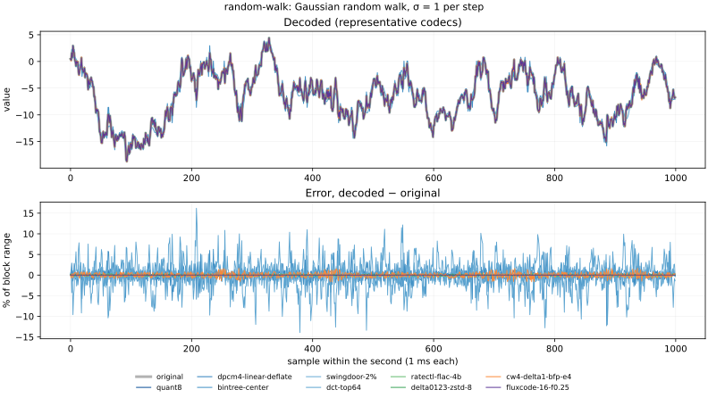
Linear chirp √2 → 32π Hz (≈1.41 → 100.5) repeating every second, amplitude 100. 5 one-minute signals; the plots show second 0 of the first (seed 9000), full scale 200. Rows are in legend order.
| codec | bytes/block | ratio | RMSE median / worst | mean err median / worst | max err median / worst | min err median / worst | max |err| median / worst | notes |
|---|---|---|---|---|---|---|---|---|
pwlinear-minmax16-merged | 256 | 31.2× | 23.3% / 24.6% | +0.00107% / +1.03% | +0% / +7.11e-15% | +0% / +0% | 99.5% / 100% | 119 knots per block |
swingdoor-0.5% | 1392 | 5.7× | 0.266% / 0.282% | -0.000106% / -0.0214% | +0% / +7.11e-15% | +0% / +0% | 0.82% / 0.878% | 687 knots per block |
swingdoor-2% | 895 | 8.9× | 1.37% / 1.41% | -0.00345% / +0.0895% | +0% / +7.11e-15% | +0% / +0% | 3.34% / 3.6% | 438 knots per block |
dct-top64 | 216 | 37.0× | 22.3% / 23.6% | +0.0952% / +1.98% | +22.6% / +57.5% | -20.1% / -66.1% | 69.9% / 110% | |
pwlinear-minmax16 | 273 | 29.3× | 23.3% / 24.5% | -2.86e-05% / +1.05% | +0% / +7.11e-15% | +0% / +0% | 99.5% / 100% | 128 knots per block |
pchip-minmax16 | 273 | 29.3× | 22.8% / 24% | +0.0185% / +1.45% | +0% / +7.11e-15% | +0% / -1.42e-14% | 99.6% / 100% | 128 knots per block |
bintree-center | 392 | 20.4× | 4.98% / 5.25% | -0.00328% / -0.418% | -0.781% / -1.56% | +0.781% / +1.56% | 24.3% / 25% | codes 00/01/10/11 per block: 318/148/269/267 |
bintree-edge | 392 | 20.4× | 10% / 10.8% | +0.049% / -0.568% | +0% / +7.11e-15% | +0% / +0% | 49.3% / 50% | |
dpcm4-linear-deflate | 183 | 43.7× | 1.27% / 1.34% | +0.00357% / -0.18% | +0.0981% / -2.19% | +0.00741% / -2.17% | 2.18% / 2.22% | |
dpcm4-cubic-deflate | 223 | 35.9× | 1.62% / 1.74% | +0.000718% / -0.15% | +1.74% / +3.03% | -1.71% / -3.12% | 4.92% / 5.03% | |
quant6-delta1-deflate | 296 | 27.0× | 0.449% / 0.467% | -0.000827% / -0.0388% | +0% / +1.42e-14% | +0% / +0% | 0.793% / 0.794% | |
dpcm6-linear-deflate | 421 | 19.0× | 0.284% / 0.308% | +0.000206% / -0.0448% | -0.0454% / -0.497% | +0.0631% / -0.497% | 0.493% / 0.5% | |
dpcm6-cubic-deflate | 439 | 18.2× | 0.362% / 0.385% | +0.000275% / +0.0307% | +0.319% / +0.591% | -0.322% / -0.542% | 1.19% / 1.26% | |
dpcm6-mulaw-deflate | 449 | 17.8× | 0.319% / 0.34% | -0.00016% / +0.0337% | +0.273% / +0.482% | -0.277% / -0.466% | 1.07% / 1.15% | |
quant8 | 1016 | 7.9× | 0.112% / 0.117% | -0.000165% / +0.0118% | +0% / -2.13e-14% | +0% / +0% | 0.196% / 0.196% | |
quant8-delta1-deflate | 646 | 12.4× | 0.112% / 0.117% | -0.000165% / +0.0118% | +0% / -2.13e-14% | +0% / +0% | 0.196% / 0.196% | |
gorilla-xor | 8154 | 1.0× | 0% / 0% | +0% / +0% | +0% / +0% | +0% / +0% | 0% / 0% | per block: same 0, reuse window 974, new window 25 |
cw-delta1-tree-2 | 404 | 19.8× | 3.21% / 3.59% | +0.00359% / -0.307% | +5.52% / +8.75% | -5.12% / -8.63% | 15.6% / 19.9% | halving bits set 17%, leaves at code limit 39% |
cw4-delta1-bfp-e4 | 552 | 14.5× | 1.2% / 1.29% | -0.00451% / -0.154% | +0.8% / +3.3% | -0.82% / -3.3% | 3.33% / 3.33% | frame exponents: mean 1.4, max 9 |
cw-delta1-tree-4 | 654 | 12.2× | 0.819% / 0.863% | -0.00433% / -0.0791% | +1.21% / +2.19% | -1.07% / -2.18% | 2.18% / 2.21% | halving bits set 19%, leaves at code limit 6% |
cw6-delta1-bfp-e4 | 802 | 10.0× | 0.265% / 0.282% | -0.000996% / -0.0274% | +0.185% / +0.791% | -0.165% / -0.754% | 0.791% / 0.794% | frame exponents: mean 1.5, max 9 |
cw8-delta1-linear | 1023 | 7.8× | 0.0693% / 0.0729% | +3.6e-06% / +0.00669% | -0.00401% / +0.121% | -0.000511% / -0.12% | 0.12% / 0.122% | |
cw8-delta1-sqrt | 1019 | 7.9× | 0.105% / 0.11% | +1.58e-05% / -0.0104% | -0.0104% / -0.0463% | +0.0096% / +0.0486% | 0.386% / 0.391% | 7% of samples use a finer-than-7-bit delta |
cw8-delta1-bfp-e2 | 1035 | 7.7× | 0.0642% / 0.0681% | -0.000247% / -0.0061% | +0.0466% / +0.195% | -0.0425% / -0.193% | 0.195% / 0.196% | frame exponents: mean 1.4, max 3 |
cw8-delta1-bfp-e4 | 1051 | 7.6× | 0.064% / 0.0678% | -0.000202% / +0.00586% | +0.0432% / +0.191% | -0.0395% / -0.193% | 0.195% / 0.196% | frame exponents: mean 1.5, max 9 |
cw-delta1-tree-7 | 1029 | 7.8× | 0.0912% / 0.0972% | -8.1e-06% / -0.00737% | +0.0642% / +0.238% | -0.0818% / -0.234% | 0.242% / 0.246% | halving bits set 19%, leaves at code limit 1% |
ratectl-delta0123-zstd-4b | 500 | 16.0× | 0.145% / 0.15% | -0.00133% / -0.0155% | -0.00345% / +0.248% | +0% / +0% | 0.252% / 0.255% | |
ratectl-flac-4b | 500 | 16.0× | 0.0602% / 0.0626% | -0.00145% / -0.00714% | -0.0907% / -0.0947% | +0% / +0% | 0.104% / 0.105% | |
delta0123-zstd-8 | 569 | 14.1× | 0.112% / 0.117% | -0.000165% / +0.0118% | +0% / +0% | +0% / +0% | 0.196% / 0.196% | orders 3: 300 |
delta12-zstd-8 | 618 | 12.9× | 0.112% / 0.117% | -0.000165% / +0.0118% | +0% / +0% | +0% / +0% | 0.196% / 0.196% | orders 2: 300 |
delta0123-zstd-10 | 789 | 10.1× | 0.028% / 0.029% | +5.25e-05% / -0.00258% | +0% / +0% | +0% / +0% | 0.0488% / 0.0489% | orders 3: 300 |
delta0123-zstd-12 | 789 | 10.1× | 0.028% / 0.029% | +5.25e-05% / -0.00258% | +0% / +0% | +0% / +0% | 0.0488% / 0.0489% | orders 3: 300; B lowered by the cap on 300 blocks (to 10) |
fluxcode-10 | 584 | 13.7× | 0.0359% / 0.037% | +3.63e-06% / +0.00329% | +0.000118% / +0.00317% | -0.000184% / -0.00869% | 0.0625% / 0.0625% | orders 3: 300; step 2^-2 |
fluxcode-12 | 693 | 11.5× | 0.00901% / 0.0094% | -8.63e-06% / -0.000825% | +0.000118% / +0.00317% | -0.000184% / -0.00869% | 0.0156% / 0.0156% | orders 3: 300; step 2^-4 |
fluxcode-16 | 977 | 8.2× | 0.000564% / 0.000583% | +9.3e-07% / +5.22e-05% | +6.81e-05% / -0.000964% | -8.26e-05% / -0.000973% | 0.000976% / 0.000977% | orders 3: 300; step 2^-8 |
fluxcode-16-f0.01 | 977 | 8.2× | 0.000564% / 0.000583% | +9.3e-07% / +5.22e-05% | +6.81e-05% / -0.000964% | -8.26e-05% / -0.000973% | 0.000976% / 0.000977% | orders 3: 300; step 2^-8 |
fluxcode-16-f0.03 | 977 | 8.2× | 0.000564% / 0.000583% | +9.3e-07% / +5.22e-05% | +6.81e-05% / -0.000964% | -8.26e-05% / -0.000973% | 0.000976% / 0.000977% | orders 3: 300; step 2^-8 |
fluxcode-16-f0.1 | 977 | 8.2× | 0.000564% / 0.000583% | +9.3e-07% / +5.22e-05% | +6.81e-05% / -0.000964% | -8.26e-05% / -0.000973% | 0.000976% / 0.000977% | orders 3: 300; step 2^-8 |
fluxcode-16-f0.25 | 977 | 8.2× | 0.000564% / 0.000583% | +9.3e-07% / +5.22e-05% | +6.81e-05% / -0.000964% | -8.26e-05% / -0.000973% | 0.000976% / 0.000977% | orders 3: 300; step 2^-8 |
fluxcode-16-f0.5 | 977 | 8.2× | 0.000564% / 0.000583% | +9.3e-07% / +5.22e-05% | +6.81e-05% / -0.000964% | -8.26e-05% / -0.000973% | 0.000976% / 0.000977% | orders 3: 300; step 2^-8 |
fluxcode-16-f1 | 977 | 8.2× | 0.000564% / 0.000583% | +9.3e-07% / +5.22e-05% | +6.81e-05% / -0.000964% | -8.26e-05% / -0.000973% | 0.000976% / 0.000977% | orders 3: 300; step 2^-8 |
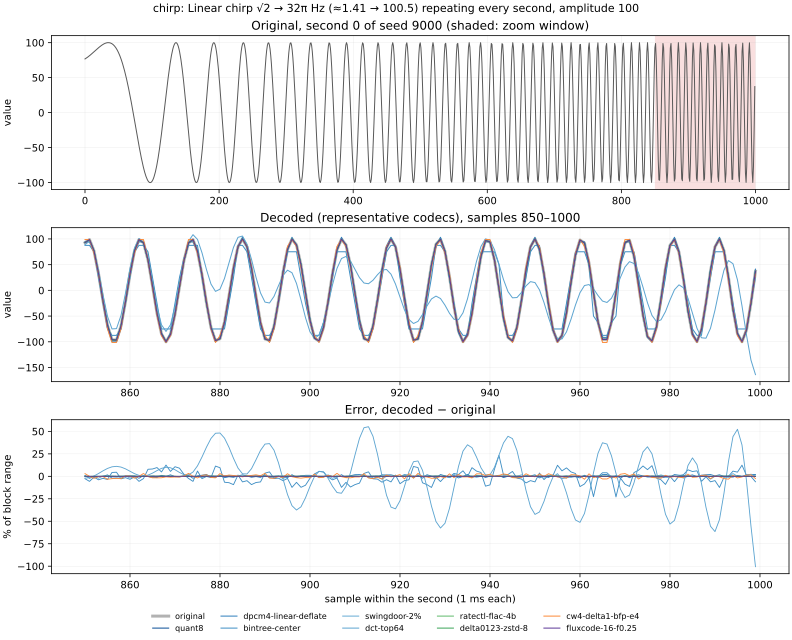
π² ≈ 9.87 Hz sine, amplitude 100, + Gaussian noise σ = 5. 5 one-minute signals; the plots show second 0 of the first (seed 10000), full scale 225.5. Rows are in legend order.
| codec | bytes/block | ratio | RMSE median / worst | mean err median / worst | max err median / worst | min err median / worst | max |err| median / worst | notes |
|---|---|---|---|---|---|---|---|---|
pwlinear-minmax16-merged | 244 | 32.8× | 2.94% / 3.24% | +0.00752% / +0.51% | +0% / +6.6e-15% | +0% / +0% | 10.3% / 14.9% | 113 knots per block |
swingdoor-0.5% | 1624 | 4.9× | 0.193% / 0.215% | +0.000301% / -0.0195% | +0% / +6.6e-15% | +0% / +0% | 0.816% / 0.889% | 803 knots per block |
swingdoor-2% | 855 | 9.4× | 1.27% / 1.36% | -0.00519% / -0.139% | +0% / -1.39% | +0% / +1.22% | 3.54% / 3.8% | 419 knots per block |
dct-top64 | 216 | 37.0× | 2.09% / 2.26% | -9.35e-07% / -0.165% | -2.88% / -6.38% | +2.94% / +7.48% | 7.92% / 13% | |
pwlinear-minmax16 | 272 | 29.5× | 2.91% / 3.21% | +0.00365% / -0.456% | +0% / +6.6e-15% | +0% / +0% | 10.3% / 14.9% | 127 knots per block |
pchip-minmax16 | 272 | 29.5× | 3.92% / 4.61% | +0.0112% / -0.563% | +0% / +6.6e-15% | +0% / +0% | 13.7% / 22.3% | 127 knots per block |
bintree-center | 392 | 20.4× | 1.52% / 1.68% | -0.0038% / -0.132% | -1.56% / -3.13% | +1.56% / +3.13% | 6.18% / 12.5% | codes 00/01/10/11 per block: 201/324/238/238 |
bintree-edge | 392 | 20.4× | 3.57% / 3.93% | -0.00774% / +0.263% | +0% / +6.6e-15% | +0% / +0% | 12.4% / 25% | |
dpcm4-linear-deflate | 484 | 16.5× | 0.5% / 0.713% | +0.00129% / -0.0486% | -0.00811% / +1.02% | -0.0171% / -1.02% | 0.868% / 1.24% | |
dpcm4-cubic-deflate | 543 | 14.7× | 0.509% / 0.58% | -5.79e-05% / +0.0506% | +0.176% / -1.76% | -0.198% / -1.98% | 1.86% / 2.35% | |
quant6-delta1-deflate | 503 | 15.9× | 0.457% / 0.478% | -8.41e-05% / -0.0445% | +0% / -1.92e-14% | +0% / +0% | 0.793% / 0.794% | |
dpcm6-linear-deflate | 714 | 11.2× | 0.113% / 0.165% | -3.81e-05% / -0.0109% | +0.00101% / +0.24% | +0.0168% / +0.255% | 0.196% / 0.281% | |
dpcm6-cubic-deflate | 755 | 10.6× | 0.115% / 0.129% | -0.000689% / +0.0124% | +0.00233% / -0.459% | -0.0244% / +0.411% | 0.418% / 0.527% | |
dpcm6-mulaw-deflate | 758 | 10.6× | 0.101% / 0.118% | +0.000352% / +0.0102% | +0.041% / -0.454% | -0.0382% / -0.441% | 0.37% / 0.477% | |
quant8 | 1016 | 7.9× | 0.113% / 0.117% | +0.000182% / -0.00864% | +0% / +6.6e-15% | +0% / +0% | 0.196% / 0.196% | |
quant8-delta1-deflate | 716 | 11.2× | 0.113% / 0.117% | +0.000182% / -0.00864% | +0% / +6.6e-15% | +0% / +0% | 0.196% / 0.196% | |
gorilla-xor | 8180 | 1.0× | 0% / 0% | +0% / +0% | +0% / +0% | +0% / +0% | 0% / 0% | per block: same 0, reuse window 984, new window 15 |
cw-delta1-tree-2 | 404 | 19.8× | 1.84% / 2.11% | -0.000151% / -0.161% | +2.36% / +6.44% | -2.24% / -8.53% | 6.07% / 8.73% | halving bits set 36%, leaves at code limit 31% |
cw4-delta1-bfp-e4 | 552 | 14.5× | 0.483% / 0.554% | +0.000378% / -0.0424% | +0.111% / -1.29% | -0.072% / +1.63% | 1.62% / 1.67% | frame exponents: mean 2.1, max 4 |
cw-delta1-tree-4 | 654 | 12.2× | 0.276% / 0.306% | +0.00046% / +0.0258% | +0.105% / -0.975% | -0.0325% / +0.854% | 0.805% / 1.62% | halving bits set 29%, leaves at code limit 5% |
cw6-delta1-bfp-e4 | 802 | 10.0× | 0.108% / 0.12% | -0.000108% / -0.00959% | +0.016% / -0.218% | -0.00851% / +0.38% | 0.198% / 0.397% | frame exponents: mean 2.2, max 4 |
cw8-delta1-linear | 1023 | 7.8× | 0.0276% / 0.0396% | -6.77e-05% / -0.00336% | -0.00242% / +0.0552% | -0.00103% / +0.065% | 0.0478% / 0.0685% | |
cw8-delta1-sqrt | 1019 | 7.9× | 0.0573% / 0.0614% | +7.26e-05% / +0.00566% | -0.103% / -0.386% | +0.118% / +0.381% | 0.195% / 0.39% | 15% of samples use a finer-than-7-bit delta |
cw8-delta1-bfp-e2 | 1035 | 7.7× | 0.0261% / 0.0287% | +6.18e-05% / -0.00246% | -0.00101% / +0.0759% | +0.000519% / -0.0488% | 0.049% / 0.098% | frame exponents: mean 2.2, max 3 |
cw8-delta1-bfp-e4 | 1051 | 7.6× | 0.0261% / 0.0287% | +6.57e-05% / -0.00246% | -0.00148% / +0.0759% | +0.000272% / -0.0488% | 0.049% / 0.098% | frame exponents: mean 2.2, max 4 |
cw-delta1-tree-7 | 1029 | 7.8× | 0.0327% / 0.0353% | -2.58e-05% / +0.0034% | +0.00183% / -0.108% | +0.000815% / -0.107% | 0.0951% / 0.166% | halving bits set 29%, leaves at code limit 1% |
ratectl-delta0123-zstd-4b | 500 | 16.0× | 0.425% / 0.444% | -2.94e-05% / +0.039% | +0.0827% / +0.519% | +0% / +0% | 0.735% / 0.739% | |
ratectl-flac-4b | 500 | 16.0× | 0.396% / 0.418% | -0.00129% / -0.0308% | -0.133% / +0.513% | +0% / +0% | 0.688% / 0.703% | |
delta0123-zstd-8 | 704 | 11.4× | 0.113% / 0.117% | +0.000182% / -0.00864% | +0% / +0% | +0% / +0% | 0.196% / 0.196% | orders 1: 300 |
delta12-zstd-8 | 704 | 11.4× | 0.113% / 0.117% | +0.000182% / -0.00864% | +0% / +0% | +0% / +0% | 0.196% / 0.196% | orders 1: 300 |
delta0123-zstd-10 | 943 | 8.5× | 0.0282% / 0.0292% | +4.77e-05% / -0.00235% | +0% / +0% | +0% / +0% | 0.0488% / 0.0489% | orders 1: 300 |
delta0123-zstd-12 | 943 | 8.5× | 0.0282% / 0.0292% | +4.77e-05% / -0.00235% | +0% / +0% | +0% / +0% | 0.0488% / 0.0489% | orders 1: 300; B lowered by the cap on 300 blocks (to 10) |
fluxcode-10 | 905 | 8.8× | 0.0324% / 0.0338% | +1.6e-05% / +0.00272% | +0.00436% / +0.0561% | -0.00139% / +0.0574% | 0.0561% / 0.0582% | orders 1: 300; step 2^-2 |
fluxcode-12 | 1202 | 6.7× | 0.00812% / 0.00861% | -7.57e-06% / +0.00107% | +0.00101% / +0.0142% | -9.46e-05% / -0.0141% | 0.014% / 0.0145% | orders 1: 300; step 2^-4 |
fluxcode-16 | 1713 | 4.7× | 0.000506% / 0.000531% | -2.11e-07% / +4.83e-05% | -8.15e-06% / +0.000867% | -7.99e-05% / -0.000891% | 0.000877% / 0.00091% | orders 1: 300; step 2^-8 |
fluxcode-16-f0.01 | 1333 | 6.0× | 0.00405% / 0.00428% | +1.73e-05% / +0.000471% | +0.00019% / -0.00706% | -0.000457% / -0.00709% | 0.00701% / 0.00728% | orders 1: 300; step 2^-5 (noise floor applied on 300 blocks) |
fluxcode-16-f0.03 | 1074 | 7.4× | 0.0162% / 0.017% | +4.83e-06% / -0.00144% | +0.00094% / -0.0285% | +0.00131% / +0.0281% | 0.028% / 0.029% | orders 1: 300; step 2^-3 (noise floor applied on 300 blocks) |
fluxcode-16-f0.1 | 862 | 9.3× | 0.0334% / 0.0673% | +3.03e-05% / -0.00511% | +0.00131% / -0.113% | -0.00139% / +0.111% | 0.0571% / 0.115% | orders 1: 300; step 2^-2..2^-1 (noise floor applied on 300 blocks) |
fluxcode-16-f0.25 | 655 | 12.2× | 0.13% / 0.137% | -8.49e-05% / +0.0141% | -0.0195% / +0.226% | +0.000114% / +0.226% | 0.224% / 0.233% | orders 1: 300; step 2^0 (noise floor applied on 300 blocks) |
fluxcode-16-f0.5 | 534 | 15.0× | 0.259% / 0.273% | -0.00164% / -0.0232% | -0.0442% / -0.451% | -0.000745% / -0.444% | 0.449% / 0.466% | orders 1: 300; step 2^1 (noise floor applied on 300 blocks) |
fluxcode-16-f1 | 421 | 19.0× | 0.518% / 0.547% | +0.00152% / -0.0484% | +0.00143% / -0.907% | +0.0498% / -0.91% | 0.897% / 0.929% | orders 1: 300; step 2^2 (noise floor applied on 300 blocks) |
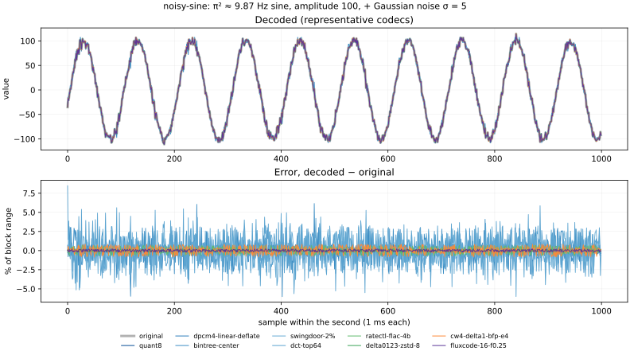
Slow drift + √2 Hz wobble, rounded to 0.1 (decimal floats). 5 one-minute signals; the plots show second 0 of the first (seed 11000), full scale 11. Rows are in legend order.
| codec | bytes/block | ratio | RMSE median / worst | mean err median / worst | max err median / worst | min err median / worst | max |err| median / worst | notes |
|---|---|---|---|---|---|---|---|---|
pwlinear-minmax16-merged | 248 | 32.3× | 0.676% / 0.87% | +0.00597% / -0.235% | +0% / +0% | +0% / +0% | 2.48% / 3.44% | 115 knots per block |
swingdoor-0.5% | 566 | 14.1× | 0.342% / 0.38% | -0.00101% / -0.0483% | +0% / -0.879% | +0% / +0.904% | 0.887% / 0.965% | 274 knots per block |
swingdoor-2% | 146 | 54.7× | 0.807% / 0.978% | +0.00608% / +0.245% | -0.879% / -2.74% | +0.904% / +2.78% | 2.76% / 3.42% | 64 knots per block |
dct-top64 | 216 | 37.0× | 0.528% / 0.654% | +6.67e-14% / +3.02e-13% | -0.473% / -2.18% | +0.482% / +2.03% | 1.78% / 2.8% | |
pwlinear-minmax16 | 273 | 29.3× | 0.667% / 0.865% | +0.00603% / -0.236% | +0% / +0% | +0% / +0% | 2.46% / 3.44% | 127 knots per block |
pchip-minmax16 | 273 | 29.3× | 0.83% / 1.02% | +0.00506% / -0.245% | +0% / +0% | +0% / +0% | 3.11% / 4.75% | 127 knots per block |
bintree-center | 392 | 20.4× | 0.275% / 0.34% | +0.00118% / +0.0527% | -0.195% / -0.781% | +0.195% / +0.781% | 1.42% / 1.54% | codes 00/01/10/11 per block: 137/361/253/251 |
bintree-edge | 392 | 20.4× | 0.652% / 0.823% | +0.000909% / +0.0851% | +0% / +0% | +0% / +0% | 2.98% / 3.1% | |
dpcm4-linear-deflate | 271 | 29.5× | 0.093% / 0.124% | -0.00163% / +0.0724% | +0% / -0.155% | +0% / +0.157% | 0.131% / 0.157% | |
dpcm4-cubic-deflate | 321 | 25.0× | 0.0874% / 0.125% | -7.34e-05% / -0.0133% | +0.0189% / +0.242% | -0.0166% / -0.243% | 0.221% / 0.272% | |
quant6-delta1-deflate | 184 | 43.5× | 0.459% / 0.561% | -0.0012% / -0.27% | +0% / +0% | +0% / +0% | 0.794% / 0.794% | |
dpcm6-linear-deflate | 271 | 29.5× | 0.021% / 0.0281% | -0.000625% / -0.017% | -0.0119% / -0.0351% | +0% / +0.0354% | 0.0296% / 0.0354% | |
dpcm6-cubic-deflate | 326 | 24.6× | 0.024% / 0.0285% | -5.08e-05% / +0.00221% | +0.0393% / -0.0731% | -0.0274% / -0.0532% | 0.0467% / 0.0944% | |
dpcm6-mulaw-deflate | 315 | 25.4× | 0.0187% / 0.0223% | +8.84e-05% / -0.00244% | +0.00494% / -0.0448% | -0.00494% / -0.0433% | 0.0397% / 0.0518% | |
quant8 | 1016 | 7.9× | 0.114% / 0.141% | +0.000537% / -0.0955% | +0% / +0% | +0% / +0% | 0.196% / 0.196% | |
quant8-delta1-deflate | 292 | 27.4× | 0.114% / 0.141% | +0.000537% / -0.0955% | +0% / +0% | +0% / +0% | 0.196% / 0.196% | |
gorilla-xor | 3107 | 2.6× | 0% / 0% | +0% / +0% | +0% / +0% | +0% / +0% | 0% / 0% | per block: same 545, reuse window 429, new window 25 |
cw-delta1-tree-2 | 404 | 19.8× | 0.173% / 0.347% | +6.62e-08% / +0.0739% | -4.66e-08% / +1.03% | +4.66e-08% / -0.99% | 0.922% / 1.96% | halving bits set 30%, leaves at code limit 27% |
cw4-delta1-bfp-e4 | 552 | 14.5× | 0.0796% / 0.0941% | +0.0019% / +0.0321% | +0% / +0.208% | +0% / +0.208% | 0.208% / 0.417% | frame exponents: mean 4.7, max 10 |
cw-delta1-tree-4 | 654 | 12.2× | 0.0186% / 0.0791% | -0.000131% / -0.0412% | +1.56e-06% / +0.155% | -1.23e-06% / +0.15% | 0.131% / 0.206% | halving bits set 24%, leaves at code limit 18% |
cw6-delta1-bfp-e4 | 802 | 10.0× | 0.019% / 0.0219% | +0.000212% / +0.00764% | +0% / +0.0496% | +0% / +0.0496% | 0.0496% / 0.0929% | frame exponents: mean 4.7, max 15 |
cw8-delta1-linear | 1023 | 7.8× | 0.00512% / 0.00686% | -0.00015% / +0.0042% | +0% / -0.00856% | +0% / +0.00865% | 0.00722% / 0.00865% | |
cw8-delta1-sqrt | 1019 | 7.9× | 0.0201% / 0.0281% | -0.000273% / +0.00376% | -0.00824% / -0.179% | +0.00513% / +0.105% | 0.0896% / 0.187% | 55% of samples use a finer-than-7-bit delta |
cw8-delta1-bfp-e2 | 1035 | 7.7× | 0.0141% / 0.0154% | +2.07e-05% / +0.00712% | +0% / +0.0245% | +0% / +0.0245% | 0.024% / 0.0245% | frame exponents: mean 3.0, max 3 |
cw8-delta1-bfp-e4 | 1051 | 7.6× | 0.0047% / 0.0054% | +6.14e-05% / +0.00189% | +0% / +0.0123% | +0% / +0.0123% | 0.0123% / 0.0188% | frame exponents: mean 4.8, max 13 |
cw-delta1-tree-7 | 1029 | 7.8× | 0.00702% / 0.00874% | -1.42e-05% / +0.0047% | +5.36e-06% / -0.0169% | -6.5e-06% / +0.016% | 0.0146% / 0.0249% | halving bits set 24%, leaves at code limit 13% |
ratectl-delta0123-zstd-4b | 500 | 16.0× | 0.00209% / 0.00249% | -4.66e-05% / +0.0017% | +0.00271% / +0.00314% | +0% / +0% | 0.00359% / 0.00365% | |
ratectl-flac-4b | 494 | 16.2× | 0.0631% / 0.0719% | -0.00132% / -0.0586% | -0.11% / -0.11% | +0% / +0% | 0.11% / 0.11% | |
delta0123-zstd-8 | 314 | 25.5× | 0.114% / 0.141% | +0.000491% / -0.0955% | +0% / +0% | +0% / +0% | 0.196% / 0.196% | orders 1: 300 |
delta12-zstd-8 | 314 | 25.5× | 0.114% / 0.141% | +0.000491% / -0.0955% | +0% / +0% | +0% / +0% | 0.196% / 0.196% | orders 1: 300 |
delta0123-zstd-10 | 338 | 23.6× | 0.0282% / 0.0304% | +0.000182% / +0.0115% | +0% / +0% | +0% / +0% | 0.0489% / 0.0489% | orders 1: 300 |
delta0123-zstd-12 | 373 | 21.5× | 0.00707% / 0.00873% | +2.06e-05% / +0.00568% | +0% / +0% | +0% / +0% | 0.0122% / 0.0122% | orders 1: 300 |
fluxcode-10 | 222 | 36.1× | 0% / 0% | +0% / +0% | +0% / +0% | +0% / +0% | 0% / 0% | orders 1: 300; decimal grid 10^-1 |
fluxcode-12 | 222 | 36.1× | 0% / 0% | +0% / +0% | +0% / +0% | +0% / +0% | 0% / 0% | orders 1: 300; decimal grid 10^-1 |
fluxcode-16 | 222 | 36.1× | 0% / 0% | +0% / +0% | +0% / +0% | +0% / +0% | 0% / 0% | orders 1: 300; decimal grid 10^-1 |
fluxcode-16-f0.01 | 222 | 36.1× | 0% / 0% | +0% / +0% | +0% / +0% | +0% / +0% | 0% / 0% | orders 1: 300; decimal grid 10^-1 |
fluxcode-16-f0.03 | 222 | 36.1× | 0% / 0% | +0% / +0% | +0% / +0% | +0% / +0% | 0% / 0% | orders 1: 300; decimal grid 10^-1 |
fluxcode-16-f0.1 | 222 | 36.1× | 0% / 0% | +0% / +0% | +0% / +0% | +0% / +0% | 0% / 0% | orders 1: 300; decimal grid 10^-1 |
fluxcode-16-f0.25 | 222 | 36.1× | 0% / 0% | +0% / +0% | +0% / +0% | +0% / +0% | 0% / 0% | orders 1: 300; decimal grid 10^-1 |
fluxcode-16-f0.5 | 222 | 36.1× | 0% / 0% | +0% / +0% | +0% / +0% | +0% / +0% | 0% / 0% | orders 1: 300; decimal grid 10^-1 |
fluxcode-16-f1 | 222 | 36.1× | 0% / 0% | +0% / +0% | +0% / +0% | +0% / +0% | 0% / 0% | orders 1: 300; decimal grid 10^-1 |
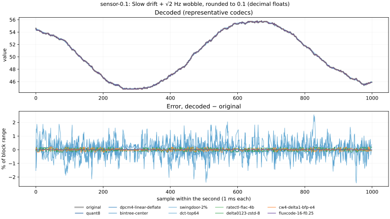
The fluxcode package (at the repo root, format in docs/SPEC.md): quantize on a power-of-two step (min exact, step = 2e with the range in [2B−1, 2B) steps), residuals mod 216 as int16 → zigzag → 16 bit planes XX B is max_quantize_bits; the noise floor is off here and has its own sweep below. Decimal detect: if every value is within a quarter power-of-two step of a multiple of 10p (coarsest p whose step is still coarser than the power-of-two step), quantize on that grid instead and reconstruct K / 10−p, bit-exact for decimal data; values that were float32 are rounded back to float32. Otherwise (ADC counts, other steps) it falls back to the power-of-two grid. Order 1 fixes the predictor; orders 0–3 picks the lowest-variance one per block, from its first 250 samples. Continuous data: the 7,200 blocks of 12 signal types used by the benchmarks. Discretized: 9 signals rounded to a quantum (0.001, 0.01, 0.1, 2−4, a 12-bit ADC step, decimals via float32), 600 blocks each. Sizes are whole units (header, per-block anchors, zstd frame). Timings: one thread, µs per 1000-sample block, including zstd and the Python API.
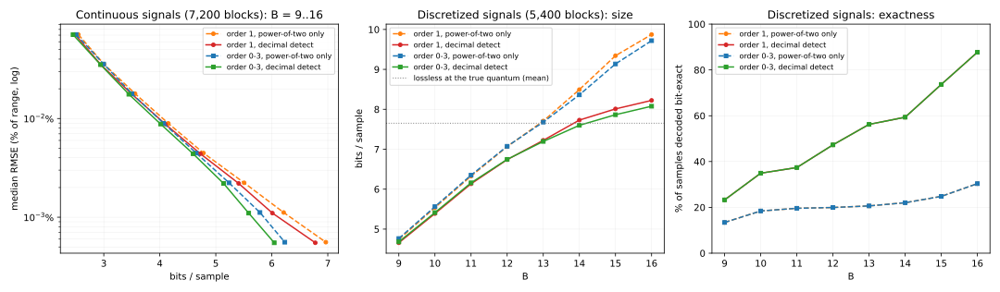
| version | B | continuous bits/sample | continuous median RMSE | continuous worst max err | discretized bits/sample | discretized median RMSE | discretized worst max err | bit-exact samples | encode µs (cont / disc) | decode µs |
|---|---|---|---|---|---|---|---|---|---|---|
| order 1, power-of-two only | 9 | 2.54 | 0.071% | 0.195% | 4.74 | 0.0713% | 0.195% | 13.4% | 3.7 / 3.6 | 2.0 |
| order 1, power-of-two only | 10 | 3.00 | 0.0356% | 0.0976% | 5.54 | 0.0335% | 0.0972% | 18.4% | 3.6 / 3.7 | 1.9 |
| order 1, power-of-two only | 11 | 3.56 | 0.0179% | 0.0488% | 6.33 | 0.0166% | 0.0483% | 19.6% | 4.0 / 4.3 | 1.9 |
| order 1, power-of-two only | 12 | 4.15 | 0.00893% | 0.0244% | 7.07 | 0.00832% | 0.0242% | 19.9% | 4.2 / 5.0 | 2.0 |
| order 1, power-of-two only | 13 | 4.78 | 0.00447% | 0.0122% | 7.71 | 0.00419% | 0.0121% | 20.6% | 4.8 / 6.0 | 1.9 |
| order 1, power-of-two only | 14 | 5.51 | 0.00223% | 0.0061% | 8.49 | 0.00216% | 0.00604% | 22.0% | 5.0 / 6.3 | 2.0 |
| order 1, power-of-two only | 15 | 6.21 | 0.00112% | 0.00305% | 9.34 | 0.00112% | 0.00302% | 24.8% | 5.1 / 6.6 | 1.9 |
| order 1, power-of-two only | 16 | 6.96 | 0.000559% | 0.00153% | 9.87 | 0.000516% | 0.00151% | 30.4% | 4.7 / 6.2 | 1.9 |
| order 1, decimal detect | 9 | 2.49 | 0.0708% | 0.195% | 4.66 | 0.0662% | 0.195% | 23.3% | 3.8 / 3.6 | 1.9 |
| order 1, decimal detect | 10 | 2.95 | 0.0352% | 0.0976% | 5.39 | 0.0322% | 0.0972% | 34.9% | 3.7 / 3.8 | 1.9 |
| order 1, decimal detect | 11 | 3.50 | 0.0176% | 0.0488% | 6.13 | 0.016% | 0.0483% | 37.4% | 4.0 / 4.2 | 1.9 |
| order 1, decimal detect | 12 | 4.10 | 0.0088% | 0.0244% | 6.74 | 0.0079% | 0.0242% | 47.3% | 4.3 / 4.8 | 2.0 |
| order 1, decimal detect | 13 | 4.72 | 0.0044% | 0.0122% | 7.22 | 0% | 0.0121% | 56.2% | 4.7 / 5.5 | 2.0 |
| order 1, decimal detect | 14 | 5.41 | 0.0022% | 0.0061% | 7.73 | 0% | 0.00604% | 59.4% | 4.9 / 5.6 | 2.0 |
| order 1, decimal detect | 15 | 6.01 | 0.0011% | 0.00305% | 8.01 | 0% | 0.00302% | 73.7% | 4.9 / 5.7 | 1.9 |
| order 1, decimal detect | 16 | 6.78 | 0.000551% | 0.00153% | 8.22 | 0% | 0.00151% | 87.7% | 4.6 / 5.4 | 1.9 |
| order 0-3, power-of-two only | 9 | 2.51 | 0.071% | 0.195% | 4.76 | 0.0713% | 0.195% | 13.4% | 3.8 / 3.6 | 1.8 |
| order 0-3, power-of-two only | 10 | 3.00 | 0.0356% | 0.0976% | 5.56 | 0.0335% | 0.0972% | 18.4% | 3.6 / 3.7 | 1.9 |
| order 0-3, power-of-two only | 11 | 3.50 | 0.0179% | 0.0488% | 6.35 | 0.0166% | 0.0483% | 19.6% | 3.9 / 4.3 | 1.8 |
| order 0-3, power-of-two only | 12 | 4.07 | 0.00893% | 0.0244% | 7.07 | 0.00832% | 0.0242% | 19.9% | 4.2 / 5.0 | 1.9 |
| order 0-3, power-of-two only | 13 | 4.65 | 0.00447% | 0.0122% | 7.68 | 0.00419% | 0.0121% | 20.6% | 4.8 / 5.9 | 1.9 |
| order 0-3, power-of-two only | 14 | 5.24 | 0.00223% | 0.0061% | 8.36 | 0.00216% | 0.00604% | 22.0% | 5.0 / 6.3 | 1.8 |
| order 0-3, power-of-two only | 15 | 5.79 | 0.00112% | 0.00305% | 9.14 | 0.00112% | 0.00302% | 24.8% | 5.1 / 6.6 | 1.9 |
| order 0-3, power-of-two only | 16 | 6.23 | 0.000559% | 0.00153% | 9.72 | 0.000516% | 0.00151% | 30.4% | 4.7 / 6.2 | 1.9 |
| order 0-3, decimal detect | 9 | 2.45 | 0.0708% | 0.195% | 4.68 | 0.0662% | 0.195% | 23.3% | 3.8 / 3.6 | 1.9 |
| order 0-3, decimal detect | 10 | 2.94 | 0.0352% | 0.0976% | 5.41 | 0.0322% | 0.0972% | 34.9% | 3.6 / 3.7 | 1.9 |
| order 0-3, decimal detect | 11 | 3.45 | 0.0176% | 0.0488% | 6.16 | 0.016% | 0.0483% | 37.4% | 3.9 / 4.2 | 1.8 |
| order 0-3, decimal detect | 12 | 4.01 | 0.0088% | 0.0244% | 6.75 | 0.0079% | 0.0242% | 47.3% | 4.2 / 4.8 | 1.9 |
| order 0-3, decimal detect | 13 | 4.59 | 0.0044% | 0.0122% | 7.20 | 0% | 0.0121% | 56.2% | 4.7 / 5.4 | 1.9 |
| order 0-3, decimal detect | 14 | 5.14 | 0.0022% | 0.0061% | 7.60 | 0% | 0.00604% | 59.4% | 4.9 / 5.5 | 1.8 |
| order 0-3, decimal detect | 15 | 5.59 | 0.0011% | 0.00305% | 7.86 | 0% | 0.00302% | 73.7% | 4.9 / 5.6 | 1.8 |
| order 0-3, decimal detect | 16 | 6.04 | 0.000551% | 0.00153% | 8.08 | 0% | 0.00151% | 87.7% | 4.6 / 5.2 | 1.8 |
| signal | lossless at the true quantum | order 1, power-of-two only | order 1, decimal detect | order 0-3, power-of-two only | order 0-3, decimal detect |
|---|---|---|---|---|---|
| random-walk q0.001 | 12.65 | 12.59 | 12.53 | 12.59 | 12.53 |
| random-walk q0.01 | 9.32 | 12.36 | 9.28 | 12.36 | 9.28 |
| random-walk q0.1 | 5.82 | 9.98 | 5.53 | 9.98 | 5.53 |
| random-walk q2^-4 | 6.49 | 6.49 | 6.49 | 6.49 | 6.49 |
| noisy-sine q0.1 | 8.91 | 10.97 | 8.89 | 10.97 | 8.89 |
| noisy-sine adc12 | 8.93 | 13.69 | 13.69 | 13.69 | 13.69 |
| sin-4.12hz q0.01 | 2.63 | 5.03 | 3.50 | 3.65 | 2.19 |
| sensor-0.1 | 1.79 | 4.01 | 1.78 | 4.01 | 1.78 |
| noisy-sine q0.01 via float32 | 12.32 | 13.74 | 12.32 | 13.74 | 12.32 |
“Lossless at the true quantum” is the same pipeline told the quantum in advance. Decimal detection reaches it on every decimal signal; the ADC and 2−4 steps aren't decimal and fall back to the power-of-two grid. random-walk q0.001 only partly: blocks whose range exceeds 65,535 × 0.001 can't be exact in 16 bits. Byte and nibble plane layouts, which fluxcode dropped for bit planes, are compared in REPORT.md §11.
On blocks whose second differences look like white noise (lag-1 autocorrelation < −0.6), the step becomes at most f·σ, with σ a robust estimate from the same differences (docs/ENCODER.md §5.2). B stays 16; on these signals the noise-floor step is coarser than the 16-bit step for every f ≥ 0.01, so f alone sets the size. fluxcode's default is f = 0.25. Noisy signals only (600 blocks each, minute units); clean signals are unaffected at every f. Errors are median RMS over blocks in units of the true noise σ, against the input and against the same signal generated without noise.
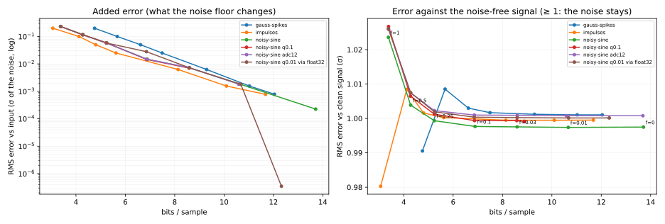
| signal | f = 0 | f = 0.01 | f = 0.03 | f = 0.1 | f = 0.25 | f = 0.5 | f = 1 |
|---|---|---|---|---|---|---|---|
| gauss-spikes | 12.04 b/s +0.001σ / 1.001σ | 11.03 b/s +0.002σ / 1.001σ | 9.29 b/s +0.006σ / 1.001σ | 7.49 b/s +0.025σ / 1.002σ | 6.62 b/s +0.050σ / 1.003σ | 5.67 b/s +0.100σ / 1.009σ | 4.75 b/s +0.199σ / 0.991σ |
| impulses | 11.68 b/s +0.001σ / 1.000σ | 10.10 b/s +0.002σ / 0.999σ | 8.14 b/s +0.006σ / 0.999σ | 5.62 b/s +0.025σ / 1.000σ | 4.80 b/s +0.050σ / 1.002σ | 4.12 b/s +0.100σ / 1.008σ | 3.06 b/s +0.200σ / 0.980σ |
| noisy-sine | 13.71 b/s +0.000σ / 0.997σ | 10.66 b/s +0.002σ / 0.997σ | 8.59 b/s +0.007σ / 0.998σ | 6.89 b/s +0.015σ / 0.998σ | 5.24 b/s +0.058σ / 0.999σ | 4.28 b/s +0.115σ / 1.004σ | 3.38 b/s +0.231σ / 1.024σ |
| noisy-sine q0.1 | 8.89 b/s +0.000σ / 0.999σ | 8.89 b/s +0.000σ / 0.999σ | 8.58 b/s +0.007σ / 0.999σ | 6.87 b/s +0.014σ / 0.999σ | 5.24 b/s +0.058σ / 1.001σ | 4.27 b/s +0.116σ / 1.006σ | 3.38 b/s +0.231σ / 1.027σ |
| noisy-sine adc12 | 13.69 b/s +0.000σ / 1.001σ | 10.59 b/s +0.002σ / 1.001σ | 8.60 b/s +0.007σ / 1.001σ | 6.86 b/s +0.015σ / 1.001σ | 5.24 b/s +0.058σ / 1.002σ | 4.27 b/s +0.116σ / 1.007σ | 3.39 b/s +0.231σ / 1.026σ |
| noisy-sine q0.01 via float32 | 12.32 b/s +0.000σ / 1.000σ | 10.68 b/s +0.002σ / 1.000σ | 8.59 b/s +0.007σ / 1.000σ | 6.85 b/s +0.028σ / 1.000σ | 5.24 b/s +0.058σ / 1.002σ | 4.28 b/s +0.116σ / 1.007σ | 3.38 b/s +0.231σ / 1.026σ |
Each cell: bits/sample, then RMS error vs input / vs clean signal (σ). Lossless points (noisy-sine q0.1 at f ≤ 0.01, still on its decimal grid) are left off the log axis. The step is 2^floor(log2(f·σ)), so f values between powers of two can give the same step.
D = step scale × max |x[i] − x[i−1]| per block. “nibble” packs two 4-bit codes per byte before deflate. One deflate call per one-minute unit. Per-kind median RMSE in % FS.
| bits | packing | curve | D scale | bits/sample | median RMSE | worst RMSE | worst max |err| | linear | quadratic | sin-4.12hz | sin-9.87hz | sin-50.3hz | gauss-spikes | impulses | square-2.24hz | random-walk | chirp | noisy-sine | sensor-0.1 |
|---|---|---|---|---|---|---|---|---|---|---|---|---|---|---|---|---|---|---|---|
| 6 | byte | cubic c=0 | 1 | 2.43 | 0.0484% | 1.06% | 1.61% | 0 | 0.00095 | 0.012 | 0.029 | 0.15 | 0.068 | 0.88 | 0 | 0.07 | 0.28 | 0.11 | 0.021 |
| 6 | byte | cubic c=0.5 | 1 | 2.56 | 0.0452% | 0.975% | 3.14% | 0 | 0.0019 | 0.018 | 0.043 | 0.22 | 0.047 | 0.47 | 0 | 0.057 | 0.29 | 0.095 | 0.013 |
| 6 | byte | cubic c=0.8 | 1 | 2.68 | 0.0532% | 1.21% | 4.04% | 0 | 0.0024 | 0.023 | 0.056 | 0.29 | 0.05 | 0.25 | 0 | 0.069 | 0.36 | 0.12 | 0.024 |
| 6 | byte | cubic c=1 | 1 | 2.65 | 0.0638% | 1.47% | 4.65% | 0 | 0.0028 | 0.027 | 0.066 | 0.33 | 0.062 | 0.22 | 0 | 0.084 | 0.44 | 0.14 | 0.025 |
| 6 | byte | μ-law μ=7 | 1 | 2.63 | 0.0485% | 1.09% | 3.69% | 0 | 0.0022 | 0.021 | 0.05 | 0.26 | 0.047 | 0.33 | 1.9e-14 | 0.06 | 0.32 | 0.1 | 0.019 |
| 6 | byte | μ-law μ=31 | 1 | 2.67 | 0.0649% | 1.47% | 5.43% | 0 | 0.0032 | 0.03 | 0.073 | 0.37 | 0.057 | 0.21 | 0 | 0.077 | 0.44 | 0.13 | 0.0083 |
| 6 | byte | μ-law μ=255 | 1 | 2.63 | 0.0977% | 2.3% | 8.11% | 0 | 0.0049 | 0.047 | 0.11 | 0.57 | 0.085 | 0.18 | 1.9e-14 | 0.11 | 0.67 | 0.19 | 0.022 |
| 6 | byte | cubic c=0 | 0.5 | 2.20 | 6.87% | 28.9% | 50.7% | 29 | 28 | 22 | 22 | 22 | 4.3 | 2.7 | 3.2 | 0.38 | 9.5 | 0.64 | 0.15 |
| 4 | byte | cubic c=0 | 1 | 1.48 | 0.213% | 4.21% | 7.12% | 0 | 0.0042 | 0.053 | 0.13 | 0.65 | 0.3 | 1.6 | 0 | 0.31 | 1.3 | 0.5 | 0.093 |
| 4 | byte | cubic c=0.5 | 1 | 1.61 | 0.2% | 4.38% | 12.7% | 0 | 0.0077 | 0.079 | 0.19 | 0.98 | 0.21 | 1.6 | 0 | 0.25 | 1.3 | 0.42 | 0.063 |
| 4 | byte | cubic c=0.8 | 1 | 1.75 | 0.232% | 5.44% | 16.1% | 0 | 0.0096 | 0.099 | 0.24 | 1.2 | 0.22 | 0.86 | 0 | 0.3 | 1.6 | 0.51 | 0.087 |
| 4 | byte | cubic c=1 | 1 | 1.76 | 0.272% | 6.46% | 18.5% | 0 | 0.011 | 0.11 | 0.27 | 1.4 | 0.27 | 0.58 | 0 | 0.37 | 1.9 | 0.62 | 0.12 |
| 4 | byte | μ-law μ=3 | 1 | 1.60 | 0.193% | 4.22% | 11.9% | 0 | 0.0071 | 0.073 | 0.17 | 0.88 | 0.21 | 1.6 | 0 | 0.26 | 1.3 | 0.42 | 0.07 |
| 4 | byte | μ-law μ=7 | 1 | 1.67 | 0.211% | 4.74% | 14.6% | 0 | 0.0087 | 0.089 | 0.21 | 1.1 | 0.21 | 1.4 | 1.9e-14 | 0.27 | 1.4 | 0.45 | 0.034 |
| 4 | byte | μ-law μ=31 | 1 | 1.75 | 0.272% | 6.49% | 20% | 0 | 0.012 | 0.12 | 0.29 | 1.5 | 0.25 | 0.62 | 0 | 0.34 | 2 | 0.58 | 0.1 |
| 4 | nibble | cubic c=0 | 1 | 1.38 | 0.213% | 4.21% | 7.12% | 0 | 0.0042 | 0.053 | 0.13 | 0.65 | 0.3 | 1.6 | 0 | 0.31 | 1.3 | 0.5 | 0.093 |
| 4 | nibble | cubic c=0.8 | 1 | 1.64 | 0.232% | 5.44% | 16.1% | 0 | 0.0096 | 0.099 | 0.24 | 1.2 | 0.22 | 0.86 | 0 | 0.3 | 1.6 | 0.51 | 0.087 |
D below the largest step causes slope overload on smooth signals (a line rising 1/sample can't be tracked with a max step of 0.5), regardless of curve. Fewer levels means less resolved noise, hence less entropy for deflate: 4-bit codes land near quant6-delta1-deflate's size with much lower error on smooth signals. Nibble packing doesn't help because deflate matches on byte boundaries.
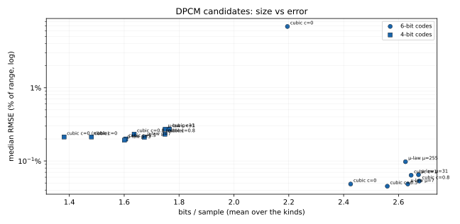
bintree-center, or to the literal bottom/top of the range in bintree-edge (same bytes; better peaks, worse RMSE).pwlinear-minmax16; only the decoder's interpolation differs.impulses peak shift).
Error can slightly exceed the deviation: classic SDT anchors to the last in-band sample, and knots are then 12-bit quantized.quant8-delta1-deflate (same samples as quant8, delta + raw deflate — lossless on top of quant8, shows how much
entropy coding buys), dct-top64 (64 largest DCT coefficients, 10-bit index + 16-bit value; frequency-domain contrast).dpcm4-*-deflate use 4-bit codes (k ∈ −7..7), still one signed byte per code before deflate.delta12-zstd-8 is the performance option: B = 8, only orders 1 and 2 considered.
Each block's min and max are in the unit.cw8-delta1-linear is closed-loop DPCM with 255 uniform levels D·k/127 (D = largest step in the block).
cw8-delta1-sqrt is the "semi-quadratic" delta: a 32-bit grid over [min, max], one byte = [odd_shift | 7-bit signed
dampened value], decoded with CLZ so delta resolution scales like √|delta| (7 bits for the largest jumps, ~13 for small ones),
wrapping mod 232. Encoder is closed loop and picks the nearest decodable delta.
cw8-delta1-bfp-e2 is 8-bit deltas (all 256 codes) with a 2-bit step exponent per 16-sample frame: step = 2−e
of the 8-bit step, decoded with a shift. e = 0 is exactly the quant8 grid with rollover across the block's full range, so max
error never exceeds quant8's (range/510); quiet frames get up to 3 extra bits. cw8-delta1-bfp-e4 uses 4-bit exponents
(e = 0..15, up to 15 extra bits; 8.41 bits/sample). cw4-delta1-bfp-e4 / cw6-delta1-bfp-e4 are the same
design with 4-bit / 6-bit codes (base grid 16 / 64 levels, max error bounded by q4's / q6's: range/30, range/126) and 4-bit
exponents: 4.42 / 6.42 bits/sample including the 20-byte header. See tslab/constwidth/.tslab/constwidth/delta_tree.py.